pacman::p_load(tidyverse, sf, httr, jsonlite, rvest, tmap, rsample, GWmodel, SpatialML, ranger, stringr, ggplot2, corrplot, car)Take-Home Exercise 3b: Predicting HDB Resale Prices with Geographically Weighted Machine Learning Methods
1. OVERVIEW
Housing is a key part of wealth for households around the world, with buying a home often being one of the biggest investments people make. Housing prices are influenced by many factors, including broader economic ones like inflation and local factors specific to the property, such as its size or location near services like schools and shopping centers. Traditionally, price prediction models use a method called Ordinary Least Squares (OLS), but this approach doesn’t account for the geographical patterns in housing data, which can lead to inaccurate results.
To improve accuracy, we will introduce Geographically Weighted Models (GWMs) to better predict housing prices by considering these location-based differences.
2. THE TASK
For this exercise, we will tackle building a predictive model to forecast HDB resale prices for the period of July to September 2024, using transaction records from HDB resale data in 2023.
3. THE DATA
For this Take-Home Exercise,we are going to use the HDB Resale Flat Prices dataset from Data.gov.sg. The analysis focuses on for five-room flats.
Here are the predictors that we used:
Structural factors: - Area of the unit - Floor level - Remaining lease - Age of the unit
Locational factors: - Proximity to the Central Business District (CBD) - Proximity to eldercare facilities - Proximity to food courts/hawker centers - Proximity to MRT stations - Proximity to parks - Proximity to shopping malls - Number of preschools within 400 meters - Number of primary and secondary schools within 400 meters
These variables provide a foundation for modeling to help capture both the physical characteristics of the flats and the surrounding amenities that may impact resale prices.
4. GEOSPATIAL DATA WRANGLING
4.1 INSTALLING THE R PACKAGES
This code chunk uses p_load() of the pacman package (stands for Package Manager) to check if the following packages are installed in the computer. The packages will then be launched into R.
4.2 Loading the Data
This code reads and processes a CSV file containing HDB resale transaction data. It filters the records to include only transactions between January 2023 and September 2024, focusing specifically on 5-room flats. It then creates a new address column by combining the block number and street name, and extracts and formats the remaining lease period into years (remaining_lease_yr) and months (remaining_lease_mth). Finally, it displays the processed data for inspection.
resale <- read_csv("data/aspatial/resale.csv") %>%
filter(month >= "2023-01" & month <= "2024-09")library(dplyr)
library(stringr)
resale_tidy <- resale %>%
mutate(address = paste(block, street_name)) %>%
mutate(
remaining_lease_yr = as.integer(str_sub(remaining_lease, 0, 2)),
remaining_lease_mth = as.integer(str_sub(remaining_lease, 9, 11))
) %>%
filter(flat_type == "5 ROOM")# View the result
print(resale_tidy)# A tibble: 10,886 × 14
month town flat_type block street_name storey_range floor_area_sqm
<chr> <chr> <chr> <chr> <chr> <chr> <dbl>
1 2023-01 ANG MO KIO 5 ROOM 306 ANG MO KIO AV… 16 TO 18 123
2 2023-01 ANG MO KIO 5 ROOM 306 ANG MO KIO AV… 04 TO 06 123
3 2023-01 ANG MO KIO 5 ROOM 402 ANG MO KIO AV… 10 TO 12 119
4 2023-01 ANG MO KIO 5 ROOM 259 ANG MO KIO AV… 13 TO 15 135
5 2023-01 ANG MO KIO 5 ROOM 176 ANG MO KIO AV… 04 TO 06 119
6 2023-01 ANG MO KIO 5 ROOM 618 ANG MO KIO AV… 13 TO 15 133
7 2023-01 ANG MO KIO 5 ROOM 520 ANG MO KIO AV… 19 TO 21 118
8 2023-01 ANG MO KIO 5 ROOM 700C ANG MO KIO AV… 19 TO 21 111
9 2023-01 ANG MO KIO 5 ROOM 714 ANG MO KIO AV… 10 TO 12 119
10 2023-01 ANG MO KIO 5 ROOM 253 ANG MO KIO ST… 04 TO 06 128
# ℹ 10,876 more rows
# ℹ 7 more variables: flat_model <chr>, lease_commence_date <dbl>,
# remaining_lease <chr>, resale_price <dbl>, address <chr>,
# remaining_lease_yr <int>, remaining_lease_mth <int>4.3 Getting Coordinates
The following code chunks below retrieve and process geographical coordinates for a list of addresses. It begins by defining the get_coords function, which takes a list of addresses (add_list) and uses the OneMap API to obtain postal codes, latitudes, and longitudes for each address. The function creates a postal_coords data frame to store these results. For each address, if only one matching record is found, its coordinates are added. If multiple results are found, entries with “NIL” postal codes are ignored, and the first valid result is used. If no results are found, the coordinates are set to NA.
Once the coordinates are collected, they are saved as an .rds file. The code then reads this file, converts the data to a spatial (sf) object, specifying the latitude and longitude columns, and transforms it into the SVY21 (EPSG:3414) coordinate system, commonly used in Singapore. Finally, the structure of the new sf object is displayed.
resale_selected <- resale_tidy %>%
filter(month == "2024-09")add_list <- sort(unique(resale_selected$address))get_coords <- function(add_list){
# Create a data frame to store all retrieved coordinates
postal_coords <- data.frame()
for (i in add_list){
#print(i)
r <- GET('https://www.onemap.gov.sg/api/common/elastic/search?',
query=list(searchVal=i,
returnGeom='Y',
getAddrDetails='Y'))
data <- fromJSON(rawToChar(r$content))
found <- data$found
res <- data$results
# Create a new data frame for each address
new_row <- data.frame()
# If single result, append
if (found == 1){
postal <- res$POSTAL
lat <- res$LATITUDE
lng <- res$LONGITUDE
new_row <- data.frame(address= i,
postal = postal,
latitude = lat,
longitude = lng)
}
# If multiple results, drop NIL and append top 1
else if (found > 1){
# Remove those with NIL as postal
res_sub <- res[res$POSTAL != "NIL", ]
# Set as NA first if no Postal
if (nrow(res_sub) == 0) {
new_row <- data.frame(address= i,
postal = NA,
latitude = NA,
longitude = NA)
}
else{
top1 <- head(res_sub, n = 1)
postal <- top1$POSTAL
lat <- top1$LATITUDE
lng <- top1$LONGITUDE
new_row <- data.frame(address= i,
postal = postal,
latitude = lat,
longitude = lng)
}
}
else {
new_row <- data.frame(address= i,
postal = NA,
latitude = NA,
longitude = NA)
}
# Add the row
postal_coords <- rbind(postal_coords, new_row)
}
return(postal_coords)
}coords <- get_coords(add_list)The first line of code saves the coords object as an .rds file to store spatial data for future use.
write_rds(coords, "data/geospatial/coords.rds")This file can be reloaded later using readRDS, which reads the data back into the environment without needing to repeat prior processing steps.
# Load the spatial data (coords) from an .rds file
coords <- readRDS("data/geospatial/coords.rds")4.4 Filtering Within Boundaries
This code performs spatial data processing and mapping with sf and tmap packages. Here’s a summary of each step:
Joining Datasets: It starts by performing a left join between
coords_sf(spatial coordinates of addresses) andresale_tidy(resale transaction data), usingaddressas the common column. This merged data is expected to retain thesfgeometry.Loading and Converting Geospatial Data: The
mpszdataset, containing Singapore’s subzone boundaries, is loaded and converted into ansfobject. It’s reprojected to Singapore’s SVY21 coordinate system (EPSG:3414) for accurate spatial analysis.Mapping Subzones: A basic map of the
mpszdataset is created usingtmap, displaying polygons representing Singapore’s subzones.Handling MULTIPOLYGONS: The code then:
- Converts
MULTIPOLYGONgeometries inmpszto individualPOLYGONgeometries. - Calculates the area of each polygon.
- Selects the largest polygon within each subzone, identified by
SUBZONE_N, retaining only the largest area to simplify further analysis.
- Converts
Filtering by Spatial Join: The
joined_datadataset is filtered to include only points within the largest polygons of each subzone, usingst_within()to spatially subset the points that fall inside the boundaries.Final Map Display: Finally, a map of the final dataset is displayed with points (using
tm_dots()), representing the filtered HDB resale transactions overlaid on the subzones map.
# Convert coords to an sf object, specifying latitude first, then longitude
coords_sf <- st_as_sf(coords, coords = c("longitude", "latitude"), crs = 4326)
# Convert to SVY21 (EPSG:3414) if needed
coords_sf <- st_transform(coords_sf, crs = 3414)
# Check the structure of the new sf object
print(coords_sf)Simple feature collection with 487 features and 2 fields
Geometry type: POINT
Dimension: XY
Bounding box: xmin: 11755.72 ymin: 28457.97 xmax: 42441.24 ymax: 48339.17
Projected CRS: SVY21 / Singapore TM
First 10 features:
address postal geometry
1 101 SIMEI ST 1 520101 POINT (41144.95 35890.2)
2 102 TECK WHYE LANE 680102 POINT (19216.72 39896.49)
3 102A PUNGGOL FIELD 821102 POINT (36064.38 42301.51)
4 103 CLEMENTI ST 14 120103 POINT (20861.59 33870.73)
5 106 TAMPINES ST 11 521106 POINT (40726.66 36629.85)
6 106A BIDADARI PK DR 341106 POINT (32222.45 35147.86)
7 106A PUNGGOL FIELD 821106 POINT (36349.34 42055.12)
8 107 JLN RAJAH 320107 POINT (30412.22 34452.8)
9 107A EDGEFIELD PLAINS 821107 POINT (36180.37 42120.79)
10 108A CANBERRA WALK 751108 POINT (27772.55 47711.53)# Perform the left join on the common column, 'address'
joined_data <- coords_sf %>%
left_join(resale_tidy, by = "address")
# Check the class to confirm it's still an sf object with geometry retained
print(class(joined_data)) # Should return `sf` if geometry is intact[1] "sf" "data.frame"mpsz <- read_rds("data/geospatial/mpsz.rds")
mpszSimple feature collection with 332 features and 6 fields
Geometry type: MULTIPOLYGON
Dimension: XY
Bounding box: xmin: 2667.538 ymin: 15748.72 xmax: 56396.44 ymax: 50256.33
Projected CRS: SVY21 / Singapore TM
First 10 features:
SUBZONE_N SUBZONE_C PLN_AREA_N PLN_AREA_C REGION_N
1 MARINA EAST MESZ01 MARINA EAST ME CENTRAL REGION
2 INSTITUTION HILL RVSZ05 RIVER VALLEY RV CENTRAL REGION
3 ROBERTSON QUAY SRSZ01 SINGAPORE RIVER SR CENTRAL REGION
4 JURONG ISLAND AND BUKOM WISZ01 WESTERN ISLANDS WI WEST REGION
5 FORT CANNING MUSZ02 MUSEUM MU CENTRAL REGION
6 MARINA EAST (MP) MPSZ05 MARINE PARADE MP CENTRAL REGION
7 SUDONG WISZ03 WESTERN ISLANDS WI WEST REGION
8 SEMAKAU WISZ02 WESTERN ISLANDS WI WEST REGION
9 SOUTHERN GROUP SISZ02 SOUTHERN ISLANDS SI CENTRAL REGION
10 SENTOSA SISZ01 SOUTHERN ISLANDS SI CENTRAL REGION
REGION_C geometry
1 CR MULTIPOLYGON (((33222.98 29...
2 CR MULTIPOLYGON (((28481.45 30...
3 CR MULTIPOLYGON (((28087.34 30...
4 WR MULTIPOLYGON (((14557.7 304...
5 CR MULTIPOLYGON (((29542.53 31...
6 CR MULTIPOLYGON (((35279.55 30...
7 WR MULTIPOLYGON (((15772.59 21...
8 WR MULTIPOLYGON (((19843.41 21...
9 CR MULTIPOLYGON (((30870.53 22...
10 CR MULTIPOLYGON (((26879.04 26...mpsz_sf <- st_as_sf(mpsz, mpsz = c("longitude", "latitude"), crs = 4326) %>%
st_transform(crs = 3414)# Set tmap to static mode
tmap_mode("plot")
# Create a basic map with `mpsz`
tm_shape(mpsz_sf) +
tm_polygons()
library(sf)
library(dplyr)
# Step 1: Convert MULTIPOLYGON geometries to individual POLYGON geometries
mpsz_polygons <- st_cast(mpsz, "POLYGON")
# Step 2: Calculate the area for each POLYGON
mpsz_polygons <- mpsz_polygons %>%
mutate(area = st_area(geometry))
# Step 3: Group by original MULTIPOLYGON identifier and keep the largest POLYGON by area
# Replace `unique_id` with the column that uniquely identifies each MULTIPOLYGON
mpsz_largest_polygons <- mpsz_polygons %>%
group_by(SUBZONE_N) %>%
filter(area == max(area)) %>%
ungroup()
# Print the result to verify
print(mpsz_largest_polygons)Simple feature collection with 332 features and 7 fields
Geometry type: POLYGON
Dimension: XY
Bounding box: xmin: 2667.538 ymin: 19021.55 xmax: 56396.44 ymax: 50256.33
Projected CRS: SVY21 / Singapore TM
# A tibble: 332 × 8
SUBZONE_N SUBZONE_C PLN_AREA_N PLN_AREA_C REGION_N REGION_C
<chr> <chr> <chr> <chr> <chr> <chr>
1 MARINA EAST MESZ01 MARINA EAST ME CENTRAL… CR
2 INSTITUTION HILL RVSZ05 RIVER VALLEY RV CENTRAL… CR
3 ROBERTSON QUAY SRSZ01 SINGAPORE RIV… SR CENTRAL… CR
4 JURONG ISLAND AND BUKOM WISZ01 WESTERN ISLAN… WI WEST RE… WR
5 FORT CANNING MUSZ02 MUSEUM MU CENTRAL… CR
6 MARINA EAST (MP) MPSZ05 MARINE PARADE MP CENTRAL… CR
7 SUDONG WISZ03 WESTERN ISLAN… WI WEST RE… WR
8 SEMAKAU WISZ02 WESTERN ISLAN… WI WEST RE… WR
9 SOUTHERN GROUP SISZ02 SOUTHERN ISLA… SI CENTRAL… CR
10 SENTOSA SISZ01 SOUTHERN ISLA… SI CENTRAL… CR
# ℹ 322 more rows
# ℹ 2 more variables: geometry <POLYGON [m]>, area [m^2]library(tmap)
# Set tmap to static mode
tmap_mode("plot")
# Create a basic map with `mpsz`
tm_shape(mpsz_largest_polygons) +
tm_polygons()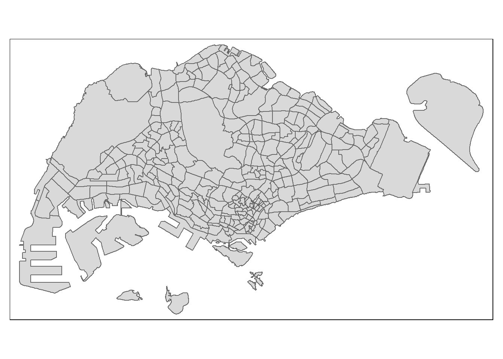
First, both joined_data (the points data) and mpsz_largest_polygons (the largest subzone polygons) are transformed to the SVY21 coordinate system (EPSG:3414) for accurate spatial alignment. A spatial join is performed using st_join with the st_within join type. This operation links each point in joined_data to its containing polygon in mpsz_largest_polygons, effectively adding polygon attributes to each point to filter the dataset. This allows us to retain only the points that fall within specific polygons.
joined_data <- st_transform(joined_data, crs = 3414)
mpsz_largest_polygons <- st_transform(mpsz_largest_polygons, crs = 3414)
joined_data <- st_join(joined_data, mpsz_largest_polygons, join = st_within)
print(joined_data)Simple feature collection with 2052 features and 22 fields
Geometry type: POINT
Dimension: XY
Bounding box: xmin: 11755.72 ymin: 28457.97 xmax: 42441.24 ymax: 48339.17
Projected CRS: SVY21 / Singapore TM
First 10 features:
address postal month town flat_type block
1 101 SIMEI ST 1 520101 2023-07 TAMPINES 5 ROOM 101
2 101 SIMEI ST 1 520101 2024-09 TAMPINES 5 ROOM 101
3 102 TECK WHYE LANE 680102 2023-06 CHOA CHU KANG 5 ROOM 102
4 102 TECK WHYE LANE 680102 2024-09 CHOA CHU KANG 5 ROOM 102
5 102A PUNGGOL FIELD 821102 2024-08 PUNGGOL 5 ROOM 102A
6 102A PUNGGOL FIELD 821102 2024-09 PUNGGOL 5 ROOM 102A
7 103 CLEMENTI ST 14 120103 2023-04 CLEMENTI 5 ROOM 103
8 103 CLEMENTI ST 14 120103 2023-04 CLEMENTI 5 ROOM 103
9 103 CLEMENTI ST 14 120103 2023-07 CLEMENTI 5 ROOM 103
10 103 CLEMENTI ST 14 120103 2024-07 CLEMENTI 5 ROOM 103
street_name storey_range floor_area_sqm flat_model lease_commence_date
1 SIMEI ST 1 01 TO 03 128 Improved 1988
2 SIMEI ST 1 01 TO 03 122 Improved 1988
3 TECK WHYE LANE 01 TO 03 121 Improved 1989
4 TECK WHYE LANE 01 TO 03 121 Improved 1989
5 PUNGGOL FIELD 01 TO 03 110 Improved 2002
6 PUNGGOL FIELD 16 TO 18 110 Improved 2002
7 CLEMENTI ST 14 10 TO 12 121 Improved 1984
8 CLEMENTI ST 14 07 TO 09 123 Improved 1984
9 CLEMENTI ST 14 04 TO 06 121 Improved 1984
10 CLEMENTI ST 14 13 TO 15 123 Improved 1984
remaining_lease resale_price remaining_lease_yr remaining_lease_mth
1 64 years 03 months 680000 64 3
2 63 years 01 month 715000 63 1
3 64 years 11 months 520000 64 11
4 63 years 08 months 575000 63 8
5 77 years 04 months 603888 77 4
6 77 years 03 months 655000 77 3
7 60 years 08 months 808800 60 8
8 60 years 08 months 800000 60 8
9 60 years 05 months 758000 60 5
10 59 years 06 months 500000 59 6
SUBZONE_N SUBZONE_C PLN_AREA_N PLN_AREA_C REGION_N REGION_C
1 SIMEI TMSZ04 TAMPINES TM EAST REGION ER
2 SIMEI TMSZ04 TAMPINES TM EAST REGION ER
3 TECK WHYE CKSZ01 CHOA CHU KANG CK WEST REGION WR
4 TECK WHYE CKSZ01 CHOA CHU KANG CK WEST REGION WR
5 PUNGGOL FIELD PGSZ04 PUNGGOL PG NORTH-EAST REGION NER
6 PUNGGOL FIELD PGSZ04 PUNGGOL PG NORTH-EAST REGION NER
7 SUNSET WAY CLSZ02 CLEMENTI CL WEST REGION WR
8 SUNSET WAY CLSZ02 CLEMENTI CL WEST REGION WR
9 SUNSET WAY CLSZ02 CLEMENTI CL WEST REGION WR
10 SUNSET WAY CLSZ02 CLEMENTI CL WEST REGION WR
area geometry
1 2777496.6 [m^2] POINT (41144.95 35890.2)
2 2777496.6 [m^2] POINT (41144.95 35890.2)
3 1003202.6 [m^2] POINT (19216.72 39896.49)
4 1003202.6 [m^2] POINT (19216.72 39896.49)
5 1378710.5 [m^2] POINT (36064.38 42301.51)
6 1378710.5 [m^2] POINT (36064.38 42301.51)
7 963924.6 [m^2] POINT (20861.59 33870.73)
8 963924.6 [m^2] POINT (20861.59 33870.73)
9 963924.6 [m^2] POINT (20861.59 33870.73)
10 963924.6 [m^2] POINT (20861.59 33870.73)The code chunk below creates a map displaying mpsz_largest_polygons as light blue polygons with dark blue borders and overlays joined_data as red points.
# Set tmap to plot mode for a static map
tmap_mode("plot")
# Plot both polygons and points
tm_shape(mpsz_largest_polygons) +
tm_polygons(alpha = 0.3, col = "lightblue", border.col = "darkblue") +
tm_shape(joined_data) +
tm_dots(col = "red", size = 0.2) +
tm_layout(main.title = "Points within Boundaries", legend.outside = TRUE)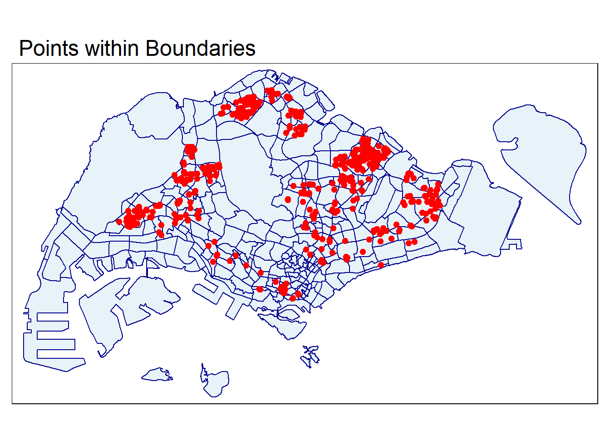
4.5 ADDING DERIVED VARIABLES - from other sources
Eldercare facility data is loaded from Data.gov.sg, and is transformed to match the coordinate system of the HDB resale dataset, and then calculated the distance from each HDB resale location to the nearest eldercare facility. This distance was added as a new variable in the dataset to analyze accessibility to eldercare services for each resale location.
We do this to all the outsourced data that we have gotten.
eldercare <- st_read(dsn = "data/geospatial/EldercareServicesSHP", layer = "ELDERCARE")Reading layer `ELDERCARE' from data source
`C:\loriellemalveda\ISSS626-GAA\Take-home_Ex\Take-home_Ex03\data\geospatial\EldercareServicesSHP'
using driver `ESRI Shapefile'
Simple feature collection with 133 features and 18 fields
Geometry type: POINT
Dimension: XY
Bounding box: xmin: 14481.92 ymin: 28218.43 xmax: 41665.14 ymax: 46804.9
Projected CRS: SVY21eldercare <- st_transform(eldercare, crs = 3414)eldercare <- st_transform(eldercare, crs = 3414)
# Step 1: Find the nearest eldercare point for each HDB point
nearest_eldercare_index <- st_nearest_feature(joined_data, eldercare)
# Step 2: Calculate the distance to the nearest eldercare point
joined_data <- joined_data %>%
mutate(distance_to_eldercare = as.numeric(st_distance(geometry, eldercare[nearest_eldercare_index, ], by_element = TRUE)))
# Check the updated dataset
print(joined_data)Simple feature collection with 2052 features and 23 fields
Geometry type: POINT
Dimension: XY
Bounding box: xmin: 11755.72 ymin: 28457.97 xmax: 42441.24 ymax: 48339.17
Projected CRS: SVY21 / Singapore TM
First 10 features:
address postal month town flat_type block
1 101 SIMEI ST 1 520101 2023-07 TAMPINES 5 ROOM 101
2 101 SIMEI ST 1 520101 2024-09 TAMPINES 5 ROOM 101
3 102 TECK WHYE LANE 680102 2023-06 CHOA CHU KANG 5 ROOM 102
4 102 TECK WHYE LANE 680102 2024-09 CHOA CHU KANG 5 ROOM 102
5 102A PUNGGOL FIELD 821102 2024-08 PUNGGOL 5 ROOM 102A
6 102A PUNGGOL FIELD 821102 2024-09 PUNGGOL 5 ROOM 102A
7 103 CLEMENTI ST 14 120103 2023-04 CLEMENTI 5 ROOM 103
8 103 CLEMENTI ST 14 120103 2023-04 CLEMENTI 5 ROOM 103
9 103 CLEMENTI ST 14 120103 2023-07 CLEMENTI 5 ROOM 103
10 103 CLEMENTI ST 14 120103 2024-07 CLEMENTI 5 ROOM 103
street_name storey_range floor_area_sqm flat_model lease_commence_date
1 SIMEI ST 1 01 TO 03 128 Improved 1988
2 SIMEI ST 1 01 TO 03 122 Improved 1988
3 TECK WHYE LANE 01 TO 03 121 Improved 1989
4 TECK WHYE LANE 01 TO 03 121 Improved 1989
5 PUNGGOL FIELD 01 TO 03 110 Improved 2002
6 PUNGGOL FIELD 16 TO 18 110 Improved 2002
7 CLEMENTI ST 14 10 TO 12 121 Improved 1984
8 CLEMENTI ST 14 07 TO 09 123 Improved 1984
9 CLEMENTI ST 14 04 TO 06 121 Improved 1984
10 CLEMENTI ST 14 13 TO 15 123 Improved 1984
remaining_lease resale_price remaining_lease_yr remaining_lease_mth
1 64 years 03 months 680000 64 3
2 63 years 01 month 715000 63 1
3 64 years 11 months 520000 64 11
4 63 years 08 months 575000 63 8
5 77 years 04 months 603888 77 4
6 77 years 03 months 655000 77 3
7 60 years 08 months 808800 60 8
8 60 years 08 months 800000 60 8
9 60 years 05 months 758000 60 5
10 59 years 06 months 500000 59 6
SUBZONE_N SUBZONE_C PLN_AREA_N PLN_AREA_C REGION_N REGION_C
1 SIMEI TMSZ04 TAMPINES TM EAST REGION ER
2 SIMEI TMSZ04 TAMPINES TM EAST REGION ER
3 TECK WHYE CKSZ01 CHOA CHU KANG CK WEST REGION WR
4 TECK WHYE CKSZ01 CHOA CHU KANG CK WEST REGION WR
5 PUNGGOL FIELD PGSZ04 PUNGGOL PG NORTH-EAST REGION NER
6 PUNGGOL FIELD PGSZ04 PUNGGOL PG NORTH-EAST REGION NER
7 SUNSET WAY CLSZ02 CLEMENTI CL WEST REGION WR
8 SUNSET WAY CLSZ02 CLEMENTI CL WEST REGION WR
9 SUNSET WAY CLSZ02 CLEMENTI CL WEST REGION WR
10 SUNSET WAY CLSZ02 CLEMENTI CL WEST REGION WR
area geometry distance_to_eldercare
1 2777496.6 [m^2] POINT (41144.95 35890.2) 758.1380
2 2777496.6 [m^2] POINT (41144.95 35890.2) 758.1380
3 1003202.6 [m^2] POINT (19216.72 39896.49) 327.6085
4 1003202.6 [m^2] POINT (19216.72 39896.49) 327.6085
5 1378710.5 [m^2] POINT (36064.38 42301.51) 701.7365
6 1378710.5 [m^2] POINT (36064.38 42301.51) 701.7365
7 963924.6 [m^2] POINT (20861.59 33870.73) 378.3587
8 963924.6 [m^2] POINT (20861.59 33870.73) 378.3587
9 963924.6 [m^2] POINT (20861.59 33870.73) 378.3587
10 963924.6 [m^2] POINT (20861.59 33870.73) 378.3587This code calculates the distance from each HDB location to Raffles Place, which represents Singapore’s Central Business District (CBD). First, the coordinates for Raffles Place (103.8514, 1.2839 in WGS84) are defined and then transformed to match the CRS of the HDB dataset (EPSG:3414). Using st_distance, the distance from each HDB point to the CBD is computed and added to joined_data as a new column, distance_to_cbd, to assess proximity to the CBD for each resale property.
# Define the CBD point (Raffles Place coordinates in WGS84)
cbd_point <- st_sfc(st_point(c(103.8514, 1.2839)), crs = 4326) # WGS84
# Transform CBD point to the same CRS as joined_data (EPSG:3414)
cbd_point <- st_transform(cbd_point, crs = 3414)
# Calculate the distance from each HDB point to the CBD point
joined_data <- joined_data %>%
mutate(distance_to_cbd = as.numeric(st_distance(geometry, cbd_point)[, 1]))
# View the updated dataset with distance to CBD
print(joined_data)Simple feature collection with 2052 features and 24 fields
Geometry type: POINT
Dimension: XY
Bounding box: xmin: 11755.72 ymin: 28457.97 xmax: 42441.24 ymax: 48339.17
Projected CRS: SVY21 / Singapore TM
First 10 features:
address postal month town flat_type block
1 101 SIMEI ST 1 520101 2023-07 TAMPINES 5 ROOM 101
2 101 SIMEI ST 1 520101 2024-09 TAMPINES 5 ROOM 101
3 102 TECK WHYE LANE 680102 2023-06 CHOA CHU KANG 5 ROOM 102
4 102 TECK WHYE LANE 680102 2024-09 CHOA CHU KANG 5 ROOM 102
5 102A PUNGGOL FIELD 821102 2024-08 PUNGGOL 5 ROOM 102A
6 102A PUNGGOL FIELD 821102 2024-09 PUNGGOL 5 ROOM 102A
7 103 CLEMENTI ST 14 120103 2023-04 CLEMENTI 5 ROOM 103
8 103 CLEMENTI ST 14 120103 2023-04 CLEMENTI 5 ROOM 103
9 103 CLEMENTI ST 14 120103 2023-07 CLEMENTI 5 ROOM 103
10 103 CLEMENTI ST 14 120103 2024-07 CLEMENTI 5 ROOM 103
street_name storey_range floor_area_sqm flat_model lease_commence_date
1 SIMEI ST 1 01 TO 03 128 Improved 1988
2 SIMEI ST 1 01 TO 03 122 Improved 1988
3 TECK WHYE LANE 01 TO 03 121 Improved 1989
4 TECK WHYE LANE 01 TO 03 121 Improved 1989
5 PUNGGOL FIELD 01 TO 03 110 Improved 2002
6 PUNGGOL FIELD 16 TO 18 110 Improved 2002
7 CLEMENTI ST 14 10 TO 12 121 Improved 1984
8 CLEMENTI ST 14 07 TO 09 123 Improved 1984
9 CLEMENTI ST 14 04 TO 06 121 Improved 1984
10 CLEMENTI ST 14 13 TO 15 123 Improved 1984
remaining_lease resale_price remaining_lease_yr remaining_lease_mth
1 64 years 03 months 680000 64 3
2 63 years 01 month 715000 63 1
3 64 years 11 months 520000 64 11
4 63 years 08 months 575000 63 8
5 77 years 04 months 603888 77 4
6 77 years 03 months 655000 77 3
7 60 years 08 months 808800 60 8
8 60 years 08 months 800000 60 8
9 60 years 05 months 758000 60 5
10 59 years 06 months 500000 59 6
SUBZONE_N SUBZONE_C PLN_AREA_N PLN_AREA_C REGION_N REGION_C
1 SIMEI TMSZ04 TAMPINES TM EAST REGION ER
2 SIMEI TMSZ04 TAMPINES TM EAST REGION ER
3 TECK WHYE CKSZ01 CHOA CHU KANG CK WEST REGION WR
4 TECK WHYE CKSZ01 CHOA CHU KANG CK WEST REGION WR
5 PUNGGOL FIELD PGSZ04 PUNGGOL PG NORTH-EAST REGION NER
6 PUNGGOL FIELD PGSZ04 PUNGGOL PG NORTH-EAST REGION NER
7 SUNSET WAY CLSZ02 CLEMENTI CL WEST REGION WR
8 SUNSET WAY CLSZ02 CLEMENTI CL WEST REGION WR
9 SUNSET WAY CLSZ02 CLEMENTI CL WEST REGION WR
10 SUNSET WAY CLSZ02 CLEMENTI CL WEST REGION WR
area geometry distance_to_eldercare
1 2777496.6 [m^2] POINT (41144.95 35890.2) 758.1380
2 2777496.6 [m^2] POINT (41144.95 35890.2) 758.1380
3 1003202.6 [m^2] POINT (19216.72 39896.49) 327.6085
4 1003202.6 [m^2] POINT (19216.72 39896.49) 327.6085
5 1378710.5 [m^2] POINT (36064.38 42301.51) 701.7365
6 1378710.5 [m^2] POINT (36064.38 42301.51) 701.7365
7 963924.6 [m^2] POINT (20861.59 33870.73) 378.3587
8 963924.6 [m^2] POINT (20861.59 33870.73) 378.3587
9 963924.6 [m^2] POINT (20861.59 33870.73) 378.3587
10 963924.6 [m^2] POINT (20861.59 33870.73) 378.3587
distance_to_cbd
1 12790.41
2 12790.41
3 14923.59
4 14923.59
5 14076.30
6 14076.30
7 10101.36
8 10101.36
9 10101.36
10 10101.36This code calculates the distance from each HDB resale location to the nearest hawker center. It first ensures that both joined_data (HDB resale data) and hawker (hawker center locations) are in the same coordinate reference system (EPSG:3414). Then, using st_nearest_feature, it identifies the index of the closest hawker center for each HDB location. The st_distance function calculates the distance from each HDB point to its nearest hawker center, adding this as a new column, distance_to_hawker, in the joined_data dataset.
hawker <- st_read("data/geospatial/HawkerCentresKML.kml")Reading layer `HAWKERCENTRE' from data source
`C:\loriellemalveda\ISSS626-GAA\Take-home_Ex\Take-home_Ex03\data\geospatial\HawkerCentresKML.kml'
using driver `KML'
Simple feature collection with 125 features and 2 fields
Geometry type: POINT
Dimension: XYZ
Bounding box: xmin: 103.6974 ymin: 1.272716 xmax: 103.9882 ymax: 1.449017
z_range: zmin: 0 zmax: 0
Geodetic CRS: WGS 84# Ensure both datasets are in the same CRS
hawker <- st_transform(hawker, crs = 3414) # Assuming hawker dataset is in sf format
# Step 1: Find the index of the nearest hawker center for each HDB point
nearest_hawker_index <- st_nearest_feature(joined_data, hawker)
# Step 2: Calculate the distance to the nearest hawker center
joined_data <- joined_data %>%
mutate(distance_to_hawker = as.numeric(st_distance(geometry, hawker[nearest_hawker_index, ], by_element = TRUE)))
# View the updated dataset with the new distance column
print(joined_data)Simple feature collection with 2052 features and 25 fields
Geometry type: POINT
Dimension: XY
Bounding box: xmin: 11755.72 ymin: 28457.97 xmax: 42441.24 ymax: 48339.17
Projected CRS: SVY21 / Singapore TM
First 10 features:
address postal month town flat_type block
1 101 SIMEI ST 1 520101 2023-07 TAMPINES 5 ROOM 101
2 101 SIMEI ST 1 520101 2024-09 TAMPINES 5 ROOM 101
3 102 TECK WHYE LANE 680102 2023-06 CHOA CHU KANG 5 ROOM 102
4 102 TECK WHYE LANE 680102 2024-09 CHOA CHU KANG 5 ROOM 102
5 102A PUNGGOL FIELD 821102 2024-08 PUNGGOL 5 ROOM 102A
6 102A PUNGGOL FIELD 821102 2024-09 PUNGGOL 5 ROOM 102A
7 103 CLEMENTI ST 14 120103 2023-04 CLEMENTI 5 ROOM 103
8 103 CLEMENTI ST 14 120103 2023-04 CLEMENTI 5 ROOM 103
9 103 CLEMENTI ST 14 120103 2023-07 CLEMENTI 5 ROOM 103
10 103 CLEMENTI ST 14 120103 2024-07 CLEMENTI 5 ROOM 103
street_name storey_range floor_area_sqm flat_model lease_commence_date
1 SIMEI ST 1 01 TO 03 128 Improved 1988
2 SIMEI ST 1 01 TO 03 122 Improved 1988
3 TECK WHYE LANE 01 TO 03 121 Improved 1989
4 TECK WHYE LANE 01 TO 03 121 Improved 1989
5 PUNGGOL FIELD 01 TO 03 110 Improved 2002
6 PUNGGOL FIELD 16 TO 18 110 Improved 2002
7 CLEMENTI ST 14 10 TO 12 121 Improved 1984
8 CLEMENTI ST 14 07 TO 09 123 Improved 1984
9 CLEMENTI ST 14 04 TO 06 121 Improved 1984
10 CLEMENTI ST 14 13 TO 15 123 Improved 1984
remaining_lease resale_price remaining_lease_yr remaining_lease_mth
1 64 years 03 months 680000 64 3
2 63 years 01 month 715000 63 1
3 64 years 11 months 520000 64 11
4 63 years 08 months 575000 63 8
5 77 years 04 months 603888 77 4
6 77 years 03 months 655000 77 3
7 60 years 08 months 808800 60 8
8 60 years 08 months 800000 60 8
9 60 years 05 months 758000 60 5
10 59 years 06 months 500000 59 6
SUBZONE_N SUBZONE_C PLN_AREA_N PLN_AREA_C REGION_N REGION_C
1 SIMEI TMSZ04 TAMPINES TM EAST REGION ER
2 SIMEI TMSZ04 TAMPINES TM EAST REGION ER
3 TECK WHYE CKSZ01 CHOA CHU KANG CK WEST REGION WR
4 TECK WHYE CKSZ01 CHOA CHU KANG CK WEST REGION WR
5 PUNGGOL FIELD PGSZ04 PUNGGOL PG NORTH-EAST REGION NER
6 PUNGGOL FIELD PGSZ04 PUNGGOL PG NORTH-EAST REGION NER
7 SUNSET WAY CLSZ02 CLEMENTI CL WEST REGION WR
8 SUNSET WAY CLSZ02 CLEMENTI CL WEST REGION WR
9 SUNSET WAY CLSZ02 CLEMENTI CL WEST REGION WR
10 SUNSET WAY CLSZ02 CLEMENTI CL WEST REGION WR
area geometry distance_to_eldercare
1 2777496.6 [m^2] POINT (41144.95 35890.2) 758.1380
2 2777496.6 [m^2] POINT (41144.95 35890.2) 758.1380
3 1003202.6 [m^2] POINT (19216.72 39896.49) 327.6085
4 1003202.6 [m^2] POINT (19216.72 39896.49) 327.6085
5 1378710.5 [m^2] POINT (36064.38 42301.51) 701.7365
6 1378710.5 [m^2] POINT (36064.38 42301.51) 701.7365
7 963924.6 [m^2] POINT (20861.59 33870.73) 378.3587
8 963924.6 [m^2] POINT (20861.59 33870.73) 378.3587
9 963924.6 [m^2] POINT (20861.59 33870.73) 378.3587
10 963924.6 [m^2] POINT (20861.59 33870.73) 378.3587
distance_to_cbd distance_to_hawker
1 12790.41 924.5228
2 12790.41 924.5228
3 14923.59 1333.7754
4 14923.59 1333.7754
5 14076.30 1040.3345
6 14076.30 1040.3345
7 10101.36 927.6112
8 10101.36 927.6112
9 10101.36 927.6112
10 10101.36 927.6112The following code chunks loads shopping mall location data from a CSV file (sourced from Kaggle), converts it into a spatial sf object using the latitude and longitude columns, and sets the coordinate reference system to WGS84 (EPSG:4326). Following the same approach as with the eldercare and hawker center data, it ensures both the HDB dataset and shopping mall locations are in the same coordinate system. Using spatial functions, it then calculates the distance from each HDB resale location to the nearest shopping mall, and adds this as a new column to the HDB dataset.
# Step 1: Read the CSV file (replace 'malls.csv' with the path to your file)
malls_data <- read.csv("data/aspatial/shopping_mall_coordinates.csv")
# Step 2: Convert to sf object using latitude and longitude columns
# Assuming the latitude and longitude columns are named "lat" and "long"
malls_sf <- malls_data %>%
st_as_sf(coords = c("LONGITUDE", "LATITUDE"), crs = 4326) # WGS84 CRS
# View the resulting sf object to confirm it has geometry
print(malls_sf)Simple feature collection with 155 features and 1 field
Geometry type: POINT
Dimension: XY
Bounding box: xmin: 103.6972 ymin: 1.274588 xmax: 103.99 ymax: 1.448231
Geodetic CRS: WGS 84
First 10 features:
Mall.Name geometry
1 100 AM POINT (103.8435 1.274588)
2 313@Somerset POINT (103.8384 1.301014)
3 Aperia POINT (103.8643 1.310474)
4 Balestier Hill Shopping Centre POINT (103.8426 1.325596)
5 Bugis Cube POINT (103.8556 1.298141)
6 Bugis Junction POINT (103.8554 1.299113)
7 Bugis+ POINT (103.8552 1.300952)
8 Capitol Piazza POINT (103.8513 1.293079)
9 Cathay Cineleisure Orchard POINT (103.8365 1.301464)
10 The Centrepoint POINT (103.84 1.30145)malls_sf <- st_transform(malls_sf, crs = 3414)malls_sf <- st_transform(malls_sf, crs = 3414)
# Step 1: Find the index of the nearest mall for each HDB point
nearest_mall_index <- st_nearest_feature(joined_data, malls_sf)
# Step 2: Calculate the distance to the nearest mall
joined_data <- joined_data %>%
mutate(distance_to_mall = as.numeric(st_distance(geometry, malls_sf[nearest_mall_index, ], by_element = TRUE)))
# View the updated dataset with the new distance column
print(joined_data)Simple feature collection with 2052 features and 26 fields
Geometry type: POINT
Dimension: XY
Bounding box: xmin: 11755.72 ymin: 28457.97 xmax: 42441.24 ymax: 48339.17
Projected CRS: SVY21 / Singapore TM
First 10 features:
address postal month town flat_type block
1 101 SIMEI ST 1 520101 2023-07 TAMPINES 5 ROOM 101
2 101 SIMEI ST 1 520101 2024-09 TAMPINES 5 ROOM 101
3 102 TECK WHYE LANE 680102 2023-06 CHOA CHU KANG 5 ROOM 102
4 102 TECK WHYE LANE 680102 2024-09 CHOA CHU KANG 5 ROOM 102
5 102A PUNGGOL FIELD 821102 2024-08 PUNGGOL 5 ROOM 102A
6 102A PUNGGOL FIELD 821102 2024-09 PUNGGOL 5 ROOM 102A
7 103 CLEMENTI ST 14 120103 2023-04 CLEMENTI 5 ROOM 103
8 103 CLEMENTI ST 14 120103 2023-04 CLEMENTI 5 ROOM 103
9 103 CLEMENTI ST 14 120103 2023-07 CLEMENTI 5 ROOM 103
10 103 CLEMENTI ST 14 120103 2024-07 CLEMENTI 5 ROOM 103
street_name storey_range floor_area_sqm flat_model lease_commence_date
1 SIMEI ST 1 01 TO 03 128 Improved 1988
2 SIMEI ST 1 01 TO 03 122 Improved 1988
3 TECK WHYE LANE 01 TO 03 121 Improved 1989
4 TECK WHYE LANE 01 TO 03 121 Improved 1989
5 PUNGGOL FIELD 01 TO 03 110 Improved 2002
6 PUNGGOL FIELD 16 TO 18 110 Improved 2002
7 CLEMENTI ST 14 10 TO 12 121 Improved 1984
8 CLEMENTI ST 14 07 TO 09 123 Improved 1984
9 CLEMENTI ST 14 04 TO 06 121 Improved 1984
10 CLEMENTI ST 14 13 TO 15 123 Improved 1984
remaining_lease resale_price remaining_lease_yr remaining_lease_mth
1 64 years 03 months 680000 64 3
2 63 years 01 month 715000 63 1
3 64 years 11 months 520000 64 11
4 63 years 08 months 575000 63 8
5 77 years 04 months 603888 77 4
6 77 years 03 months 655000 77 3
7 60 years 08 months 808800 60 8
8 60 years 08 months 800000 60 8
9 60 years 05 months 758000 60 5
10 59 years 06 months 500000 59 6
SUBZONE_N SUBZONE_C PLN_AREA_N PLN_AREA_C REGION_N REGION_C
1 SIMEI TMSZ04 TAMPINES TM EAST REGION ER
2 SIMEI TMSZ04 TAMPINES TM EAST REGION ER
3 TECK WHYE CKSZ01 CHOA CHU KANG CK WEST REGION WR
4 TECK WHYE CKSZ01 CHOA CHU KANG CK WEST REGION WR
5 PUNGGOL FIELD PGSZ04 PUNGGOL PG NORTH-EAST REGION NER
6 PUNGGOL FIELD PGSZ04 PUNGGOL PG NORTH-EAST REGION NER
7 SUNSET WAY CLSZ02 CLEMENTI CL WEST REGION WR
8 SUNSET WAY CLSZ02 CLEMENTI CL WEST REGION WR
9 SUNSET WAY CLSZ02 CLEMENTI CL WEST REGION WR
10 SUNSET WAY CLSZ02 CLEMENTI CL WEST REGION WR
area geometry distance_to_eldercare
1 2777496.6 [m^2] POINT (41144.95 35890.2) 758.1380
2 2777496.6 [m^2] POINT (41144.95 35890.2) 758.1380
3 1003202.6 [m^2] POINT (19216.72 39896.49) 327.6085
4 1003202.6 [m^2] POINT (19216.72 39896.49) 327.6085
5 1378710.5 [m^2] POINT (36064.38 42301.51) 701.7365
6 1378710.5 [m^2] POINT (36064.38 42301.51) 701.7365
7 963924.6 [m^2] POINT (20861.59 33870.73) 378.3587
8 963924.6 [m^2] POINT (20861.59 33870.73) 378.3587
9 963924.6 [m^2] POINT (20861.59 33870.73) 378.3587
10 963924.6 [m^2] POINT (20861.59 33870.73) 378.3587
distance_to_cbd distance_to_hawker distance_to_mall
1 12790.41 924.5228 271.0456
2 12790.41 924.5228 271.0456
3 14923.59 1333.7754 390.7374
4 14923.59 1333.7754 390.7374
5 14076.30 1040.3345 748.0958
6 14076.30 1040.3345 748.0958
7 10101.36 927.6112 1001.6526
8 10101.36 927.6112 1001.6526
9 10101.36 927.6112 1001.6526
10 10101.36 927.6112 1001.6526This code processes train station data from a KML file from data.gov.sg, converts it to a spatial format and sets the coordinate reference system to EPSG:3414 (SVY21) for Singapore. It begins by checking for and identifying any invalid geometries in train_stations. After confirming both train_stations and joined_data (HDB resale data) are in the same CRS, the code calculates the distance from each HDB resale location to the nearest train station using spatial functions.
This distance is added as a new column, distance_to_mrt, in the joined_data dataset.
train_stations <- st_read(dsn = "data/geospatial/LTAMRTStationExitKML.kml")Reading layer `MRT_EXITS' from data source
`C:\loriellemalveda\ISSS626-GAA\Take-home_Ex\Take-home_Ex03\data\geospatial\LTAMRTStationExitKML.kml'
using driver `KML'
Simple feature collection with 563 features and 2 fields
Geometry type: POINT
Dimension: XYZ
Bounding box: xmin: 103.6368 ymin: 1.264972 xmax: 103.9893 ymax: 1.449157
z_range: zmin: 0 zmax: 0
Geodetic CRS: WGS 84train_stations <- st_transform(train_stations, crs = 3414)# Ensure train_stations is in the desired CRS (e.g., EPSG:3414)
train_stations <- st_transform(train_stations, crs = 3414)
# Step 1: Identify invalid polygons
invalid_polygons <- train_stations %>%
filter(!st_is_valid(geometry))
# Step 2: View invalid polygons
print(invalid_polygons)Simple feature collection with 0 features and 2 fields
Bounding box: xmin: NA ymin: NA xmax: NA ymax: NA
Projected CRS: SVY21 / Singapore TM
[1] Name Description geometry
<0 rows> (or 0-length row.names)train_sf <- st_transform(train_stations, crs = 3414)
# Step 1: Find the index of the nearest mall for each HDB point
nearest_mrt_index <- st_nearest_feature(joined_data, train_sf)
# Step 2: Calculate the distance to the nearest mall
joined_data <- joined_data %>%
mutate(distance_to_mrt = as.numeric(st_distance(geometry, train_sf[nearest_mrt_index, ], by_element = TRUE)))
# View the updated dataset with the new distance column
print(joined_data)Simple feature collection with 2052 features and 27 fields
Geometry type: POINT
Dimension: XY
Bounding box: xmin: 11755.72 ymin: 28457.97 xmax: 42441.24 ymax: 48339.17
Projected CRS: SVY21 / Singapore TM
First 10 features:
address postal month town flat_type block
1 101 SIMEI ST 1 520101 2023-07 TAMPINES 5 ROOM 101
2 101 SIMEI ST 1 520101 2024-09 TAMPINES 5 ROOM 101
3 102 TECK WHYE LANE 680102 2023-06 CHOA CHU KANG 5 ROOM 102
4 102 TECK WHYE LANE 680102 2024-09 CHOA CHU KANG 5 ROOM 102
5 102A PUNGGOL FIELD 821102 2024-08 PUNGGOL 5 ROOM 102A
6 102A PUNGGOL FIELD 821102 2024-09 PUNGGOL 5 ROOM 102A
7 103 CLEMENTI ST 14 120103 2023-04 CLEMENTI 5 ROOM 103
8 103 CLEMENTI ST 14 120103 2023-04 CLEMENTI 5 ROOM 103
9 103 CLEMENTI ST 14 120103 2023-07 CLEMENTI 5 ROOM 103
10 103 CLEMENTI ST 14 120103 2024-07 CLEMENTI 5 ROOM 103
street_name storey_range floor_area_sqm flat_model lease_commence_date
1 SIMEI ST 1 01 TO 03 128 Improved 1988
2 SIMEI ST 1 01 TO 03 122 Improved 1988
3 TECK WHYE LANE 01 TO 03 121 Improved 1989
4 TECK WHYE LANE 01 TO 03 121 Improved 1989
5 PUNGGOL FIELD 01 TO 03 110 Improved 2002
6 PUNGGOL FIELD 16 TO 18 110 Improved 2002
7 CLEMENTI ST 14 10 TO 12 121 Improved 1984
8 CLEMENTI ST 14 07 TO 09 123 Improved 1984
9 CLEMENTI ST 14 04 TO 06 121 Improved 1984
10 CLEMENTI ST 14 13 TO 15 123 Improved 1984
remaining_lease resale_price remaining_lease_yr remaining_lease_mth
1 64 years 03 months 680000 64 3
2 63 years 01 month 715000 63 1
3 64 years 11 months 520000 64 11
4 63 years 08 months 575000 63 8
5 77 years 04 months 603888 77 4
6 77 years 03 months 655000 77 3
7 60 years 08 months 808800 60 8
8 60 years 08 months 800000 60 8
9 60 years 05 months 758000 60 5
10 59 years 06 months 500000 59 6
SUBZONE_N SUBZONE_C PLN_AREA_N PLN_AREA_C REGION_N REGION_C
1 SIMEI TMSZ04 TAMPINES TM EAST REGION ER
2 SIMEI TMSZ04 TAMPINES TM EAST REGION ER
3 TECK WHYE CKSZ01 CHOA CHU KANG CK WEST REGION WR
4 TECK WHYE CKSZ01 CHOA CHU KANG CK WEST REGION WR
5 PUNGGOL FIELD PGSZ04 PUNGGOL PG NORTH-EAST REGION NER
6 PUNGGOL FIELD PGSZ04 PUNGGOL PG NORTH-EAST REGION NER
7 SUNSET WAY CLSZ02 CLEMENTI CL WEST REGION WR
8 SUNSET WAY CLSZ02 CLEMENTI CL WEST REGION WR
9 SUNSET WAY CLSZ02 CLEMENTI CL WEST REGION WR
10 SUNSET WAY CLSZ02 CLEMENTI CL WEST REGION WR
area geometry distance_to_eldercare
1 2777496.6 [m^2] POINT (41144.95 35890.2) 758.1380
2 2777496.6 [m^2] POINT (41144.95 35890.2) 758.1380
3 1003202.6 [m^2] POINT (19216.72 39896.49) 327.6085
4 1003202.6 [m^2] POINT (19216.72 39896.49) 327.6085
5 1378710.5 [m^2] POINT (36064.38 42301.51) 701.7365
6 1378710.5 [m^2] POINT (36064.38 42301.51) 701.7365
7 963924.6 [m^2] POINT (20861.59 33870.73) 378.3587
8 963924.6 [m^2] POINT (20861.59 33870.73) 378.3587
9 963924.6 [m^2] POINT (20861.59 33870.73) 378.3587
10 963924.6 [m^2] POINT (20861.59 33870.73) 378.3587
distance_to_cbd distance_to_hawker distance_to_mall distance_to_mrt
1 12790.41 924.5228 271.0456 332.54769
2 12790.41 924.5228 271.0456 332.54769
3 14923.59 1333.7754 390.7374 85.37721
4 14923.59 1333.7754 390.7374 85.37721
5 14076.30 1040.3345 748.0958 36.02671
6 14076.30 1040.3345 748.0958 36.02671
7 10101.36 927.6112 1001.6526 903.86491
8 10101.36 927.6112 1001.6526 903.86491
9 10101.36 927.6112 1001.6526 903.86491
10 10101.36 927.6112 1001.6526 903.86491This code loads park data from a KML file from data.gov.sg, converts it to an sf spatial format, and sets the coordinate reference system to EPSG:3414 (SVY21) for consistency with the HDB resale data. After ensuring that both joined_data (HDB data) and parks are in the same CRS, it calculates the distance from each HDB resale location to the nearest park. This distance is added as a new column, distance_to_parks, in the joined_data dataset.
parks <- st_read(dsn = "data/geospatial/Parks.kml")Reading layer `NATIONALPARKS' from data source
`C:\loriellemalveda\ISSS626-GAA\Take-home_Ex\Take-home_Ex03\data\geospatial\Parks.kml'
using driver `KML'
Simple feature collection with 430 features and 2 fields
Geometry type: POINT
Dimension: XYZ
Bounding box: xmin: 103.6929 ymin: 1.214491 xmax: 104.0538 ymax: 1.462094
z_range: zmin: 0 zmax: 0
Geodetic CRS: WGS 84parks<- st_transform(parks, crs = 3414)parks_sf <- st_transform(parks, crs = 3414)
# Step 1: Find the index of the nearest mall for each HDB point
nearest_parks_index <- st_nearest_feature(joined_data, parks_sf)
# Step 2: Calculate the distance to the nearest mall
joined_data <- joined_data %>%
mutate(distance_to_parks = as.numeric(st_distance(geometry, parks_sf[nearest_parks_index, ], by_element = TRUE)))
# View the updated dataset with the new distance column
print(joined_data)Simple feature collection with 2052 features and 28 fields
Geometry type: POINT
Dimension: XY
Bounding box: xmin: 11755.72 ymin: 28457.97 xmax: 42441.24 ymax: 48339.17
Projected CRS: SVY21 / Singapore TM
First 10 features:
address postal month town flat_type block
1 101 SIMEI ST 1 520101 2023-07 TAMPINES 5 ROOM 101
2 101 SIMEI ST 1 520101 2024-09 TAMPINES 5 ROOM 101
3 102 TECK WHYE LANE 680102 2023-06 CHOA CHU KANG 5 ROOM 102
4 102 TECK WHYE LANE 680102 2024-09 CHOA CHU KANG 5 ROOM 102
5 102A PUNGGOL FIELD 821102 2024-08 PUNGGOL 5 ROOM 102A
6 102A PUNGGOL FIELD 821102 2024-09 PUNGGOL 5 ROOM 102A
7 103 CLEMENTI ST 14 120103 2023-04 CLEMENTI 5 ROOM 103
8 103 CLEMENTI ST 14 120103 2023-04 CLEMENTI 5 ROOM 103
9 103 CLEMENTI ST 14 120103 2023-07 CLEMENTI 5 ROOM 103
10 103 CLEMENTI ST 14 120103 2024-07 CLEMENTI 5 ROOM 103
street_name storey_range floor_area_sqm flat_model lease_commence_date
1 SIMEI ST 1 01 TO 03 128 Improved 1988
2 SIMEI ST 1 01 TO 03 122 Improved 1988
3 TECK WHYE LANE 01 TO 03 121 Improved 1989
4 TECK WHYE LANE 01 TO 03 121 Improved 1989
5 PUNGGOL FIELD 01 TO 03 110 Improved 2002
6 PUNGGOL FIELD 16 TO 18 110 Improved 2002
7 CLEMENTI ST 14 10 TO 12 121 Improved 1984
8 CLEMENTI ST 14 07 TO 09 123 Improved 1984
9 CLEMENTI ST 14 04 TO 06 121 Improved 1984
10 CLEMENTI ST 14 13 TO 15 123 Improved 1984
remaining_lease resale_price remaining_lease_yr remaining_lease_mth
1 64 years 03 months 680000 64 3
2 63 years 01 month 715000 63 1
3 64 years 11 months 520000 64 11
4 63 years 08 months 575000 63 8
5 77 years 04 months 603888 77 4
6 77 years 03 months 655000 77 3
7 60 years 08 months 808800 60 8
8 60 years 08 months 800000 60 8
9 60 years 05 months 758000 60 5
10 59 years 06 months 500000 59 6
SUBZONE_N SUBZONE_C PLN_AREA_N PLN_AREA_C REGION_N REGION_C
1 SIMEI TMSZ04 TAMPINES TM EAST REGION ER
2 SIMEI TMSZ04 TAMPINES TM EAST REGION ER
3 TECK WHYE CKSZ01 CHOA CHU KANG CK WEST REGION WR
4 TECK WHYE CKSZ01 CHOA CHU KANG CK WEST REGION WR
5 PUNGGOL FIELD PGSZ04 PUNGGOL PG NORTH-EAST REGION NER
6 PUNGGOL FIELD PGSZ04 PUNGGOL PG NORTH-EAST REGION NER
7 SUNSET WAY CLSZ02 CLEMENTI CL WEST REGION WR
8 SUNSET WAY CLSZ02 CLEMENTI CL WEST REGION WR
9 SUNSET WAY CLSZ02 CLEMENTI CL WEST REGION WR
10 SUNSET WAY CLSZ02 CLEMENTI CL WEST REGION WR
area geometry distance_to_eldercare
1 2777496.6 [m^2] POINT (41144.95 35890.2) 758.1380
2 2777496.6 [m^2] POINT (41144.95 35890.2) 758.1380
3 1003202.6 [m^2] POINT (19216.72 39896.49) 327.6085
4 1003202.6 [m^2] POINT (19216.72 39896.49) 327.6085
5 1378710.5 [m^2] POINT (36064.38 42301.51) 701.7365
6 1378710.5 [m^2] POINT (36064.38 42301.51) 701.7365
7 963924.6 [m^2] POINT (20861.59 33870.73) 378.3587
8 963924.6 [m^2] POINT (20861.59 33870.73) 378.3587
9 963924.6 [m^2] POINT (20861.59 33870.73) 378.3587
10 963924.6 [m^2] POINT (20861.59 33870.73) 378.3587
distance_to_cbd distance_to_hawker distance_to_mall distance_to_mrt
1 12790.41 924.5228 271.0456 332.54769
2 12790.41 924.5228 271.0456 332.54769
3 14923.59 1333.7754 390.7374 85.37721
4 14923.59 1333.7754 390.7374 85.37721
5 14076.30 1040.3345 748.0958 36.02671
6 14076.30 1040.3345 748.0958 36.02671
7 10101.36 927.6112 1001.6526 903.86491
8 10101.36 927.6112 1001.6526 903.86491
9 10101.36 927.6112 1001.6526 903.86491
10 10101.36 927.6112 1001.6526 903.86491
distance_to_parks
1 256.4781
2 256.4781
3 341.9659
4 341.9659
5 828.0045
6 828.0045
7 459.1670
8 459.1670
9 459.1670
10 459.1670This code calculates the number of preschools and schools within a 400-meter radius of each HDB resale location. This distance is chosen as it is reasonable for walking or easy travel. It first loads and transforms the preschool and school zone data into the same coordinate reference system (EPSG:3414) as the HDB data in joined_data. Then, it creates a 400-meter buffer around each HDB point to represent a walkable area. Using st_intersects, it identifies which preschools and schools fall within each buffer and counts them. These counts are added to joined_data as new columns, preschools_within_400m and schools_within_400m.
preschools <- st_read("data/geospatial/PreSchoolsLocation.kml")Reading layer `PRESCHOOLS_LOCATION' from data source
`C:\loriellemalveda\ISSS626-GAA\Take-home_Ex\Take-home_Ex03\data\geospatial\PreSchoolsLocation.kml'
using driver `KML'
Simple feature collection with 2290 features and 2 fields
Geometry type: POINT
Dimension: XYZ
Bounding box: xmin: 103.6878 ymin: 1.247759 xmax: 103.9897 ymax: 1.462134
z_range: zmin: 0 zmax: 0
Geodetic CRS: WGS 84school_zones <- st_read(dsn = "data/geospatial/SchoolZone_Jan2024/SchoolZone_Jan2024", layer="SCHOOLZONE") Reading layer `SCHOOLZONE' from data source
`C:\loriellemalveda\ISSS626-GAA\Take-home_Ex\Take-home_Ex03\data\geospatial\SchoolZone_Jan2024\SchoolZone_Jan2024'
using driver `ESRI Shapefile'
Simple feature collection with 211 features and 3 fields
Geometry type: MULTIPOLYGON
Dimension: XY
Bounding box: xmin: 11717.22 ymin: 28358.21 xmax: 42850.04 ymax: 48798.1
Projected CRS: SVY21school_zones <- st_transform(school_zones, crs = 3414)preschools <- st_transform(preschools, crs = 3414) # Assuming preschools is an sf object
schools <- st_transform(school_zones, crs = 3414) # Assuming schools is an sf object
# Create a 500m buffer around each HDB point
hdb_buffers <- st_buffer(joined_data, dist = 400)# Step 2: Count preschools within each HDB buffer
# Use st_intersects to identify preschools within each buffer
preschools_within_buffer <- st_intersects(hdb_buffers, preschools)
joined_data$preschools_within_400m <- sapply(preschools_within_buffer, length)
# Step 3: Count schools within each HDB buffer
schools_within_buffer <- st_intersects(hdb_buffers, schools)
joined_data$schools_within_400m <- sapply(schools_within_buffer, length)
# View the updated dataset to check counts
print(joined_data)Simple feature collection with 2052 features and 30 fields
Geometry type: POINT
Dimension: XY
Bounding box: xmin: 11755.72 ymin: 28457.97 xmax: 42441.24 ymax: 48339.17
Projected CRS: SVY21 / Singapore TM
First 10 features:
address postal month town flat_type block
1 101 SIMEI ST 1 520101 2023-07 TAMPINES 5 ROOM 101
2 101 SIMEI ST 1 520101 2024-09 TAMPINES 5 ROOM 101
3 102 TECK WHYE LANE 680102 2023-06 CHOA CHU KANG 5 ROOM 102
4 102 TECK WHYE LANE 680102 2024-09 CHOA CHU KANG 5 ROOM 102
5 102A PUNGGOL FIELD 821102 2024-08 PUNGGOL 5 ROOM 102A
6 102A PUNGGOL FIELD 821102 2024-09 PUNGGOL 5 ROOM 102A
7 103 CLEMENTI ST 14 120103 2023-04 CLEMENTI 5 ROOM 103
8 103 CLEMENTI ST 14 120103 2023-04 CLEMENTI 5 ROOM 103
9 103 CLEMENTI ST 14 120103 2023-07 CLEMENTI 5 ROOM 103
10 103 CLEMENTI ST 14 120103 2024-07 CLEMENTI 5 ROOM 103
street_name storey_range floor_area_sqm flat_model lease_commence_date
1 SIMEI ST 1 01 TO 03 128 Improved 1988
2 SIMEI ST 1 01 TO 03 122 Improved 1988
3 TECK WHYE LANE 01 TO 03 121 Improved 1989
4 TECK WHYE LANE 01 TO 03 121 Improved 1989
5 PUNGGOL FIELD 01 TO 03 110 Improved 2002
6 PUNGGOL FIELD 16 TO 18 110 Improved 2002
7 CLEMENTI ST 14 10 TO 12 121 Improved 1984
8 CLEMENTI ST 14 07 TO 09 123 Improved 1984
9 CLEMENTI ST 14 04 TO 06 121 Improved 1984
10 CLEMENTI ST 14 13 TO 15 123 Improved 1984
remaining_lease resale_price remaining_lease_yr remaining_lease_mth
1 64 years 03 months 680000 64 3
2 63 years 01 month 715000 63 1
3 64 years 11 months 520000 64 11
4 63 years 08 months 575000 63 8
5 77 years 04 months 603888 77 4
6 77 years 03 months 655000 77 3
7 60 years 08 months 808800 60 8
8 60 years 08 months 800000 60 8
9 60 years 05 months 758000 60 5
10 59 years 06 months 500000 59 6
SUBZONE_N SUBZONE_C PLN_AREA_N PLN_AREA_C REGION_N REGION_C
1 SIMEI TMSZ04 TAMPINES TM EAST REGION ER
2 SIMEI TMSZ04 TAMPINES TM EAST REGION ER
3 TECK WHYE CKSZ01 CHOA CHU KANG CK WEST REGION WR
4 TECK WHYE CKSZ01 CHOA CHU KANG CK WEST REGION WR
5 PUNGGOL FIELD PGSZ04 PUNGGOL PG NORTH-EAST REGION NER
6 PUNGGOL FIELD PGSZ04 PUNGGOL PG NORTH-EAST REGION NER
7 SUNSET WAY CLSZ02 CLEMENTI CL WEST REGION WR
8 SUNSET WAY CLSZ02 CLEMENTI CL WEST REGION WR
9 SUNSET WAY CLSZ02 CLEMENTI CL WEST REGION WR
10 SUNSET WAY CLSZ02 CLEMENTI CL WEST REGION WR
area geometry distance_to_eldercare
1 2777496.6 [m^2] POINT (41144.95 35890.2) 758.1380
2 2777496.6 [m^2] POINT (41144.95 35890.2) 758.1380
3 1003202.6 [m^2] POINT (19216.72 39896.49) 327.6085
4 1003202.6 [m^2] POINT (19216.72 39896.49) 327.6085
5 1378710.5 [m^2] POINT (36064.38 42301.51) 701.7365
6 1378710.5 [m^2] POINT (36064.38 42301.51) 701.7365
7 963924.6 [m^2] POINT (20861.59 33870.73) 378.3587
8 963924.6 [m^2] POINT (20861.59 33870.73) 378.3587
9 963924.6 [m^2] POINT (20861.59 33870.73) 378.3587
10 963924.6 [m^2] POINT (20861.59 33870.73) 378.3587
distance_to_cbd distance_to_hawker distance_to_mall distance_to_mrt
1 12790.41 924.5228 271.0456 332.54769
2 12790.41 924.5228 271.0456 332.54769
3 14923.59 1333.7754 390.7374 85.37721
4 14923.59 1333.7754 390.7374 85.37721
5 14076.30 1040.3345 748.0958 36.02671
6 14076.30 1040.3345 748.0958 36.02671
7 10101.36 927.6112 1001.6526 903.86491
8 10101.36 927.6112 1001.6526 903.86491
9 10101.36 927.6112 1001.6526 903.86491
10 10101.36 927.6112 1001.6526 903.86491
distance_to_parks preschools_within_400m schools_within_400m
1 256.4781 5 1
2 256.4781 5 1
3 341.9659 7 0
4 341.9659 7 0
5 828.0045 10 1
6 828.0045 10 1
7 459.1670 3 0
8 459.1670 3 0
9 459.1670 3 0
10 459.1670 3 0This code converts the distance variables in joined_data from meters to kilometers for easier interpretation. It divides each distance column—distance_to_eldercare, distance_to_cbd, distance_to_hawker, distance_to_mall, distance_to_mrt, and distance_to_parks—by 1,000, to represent distances in kilometers.
# Convert distance variables from meters to kilometers
joined_data <- joined_data %>%
mutate(
distance_to_eldercare = distance_to_eldercare / 1000,
distance_to_cbd = distance_to_cbd / 1000,
distance_to_hawker = distance_to_hawker / 1000,
distance_to_mall = distance_to_mall / 1000,
distance_to_mrt = distance_to_mrt / 1000,
distance_to_parks = distance_to_parks / 1000
)4.6 Derived Variables From the Original Dataset
A new variable, total_remaining_lease_mths, calculates the total remaining lease time by converting years and months into a single metric in months.
joined_data <- joined_data %>%
mutate(total_remaining_lease_mths = (remaining_lease_yr * 12) + remaining_lease_mth)
# View the updated dataset to confirm the new column
head(joined_data)Simple feature collection with 6 features and 31 fields
Geometry type: POINT
Dimension: XY
Bounding box: xmin: 19216.72 ymin: 35890.2 xmax: 41144.95 ymax: 42301.51
Projected CRS: SVY21 / Singapore TM
address postal month town flat_type block
1 101 SIMEI ST 1 520101 2023-07 TAMPINES 5 ROOM 101
2 101 SIMEI ST 1 520101 2024-09 TAMPINES 5 ROOM 101
3 102 TECK WHYE LANE 680102 2023-06 CHOA CHU KANG 5 ROOM 102
4 102 TECK WHYE LANE 680102 2024-09 CHOA CHU KANG 5 ROOM 102
5 102A PUNGGOL FIELD 821102 2024-08 PUNGGOL 5 ROOM 102A
6 102A PUNGGOL FIELD 821102 2024-09 PUNGGOL 5 ROOM 102A
street_name storey_range floor_area_sqm flat_model lease_commence_date
1 SIMEI ST 1 01 TO 03 128 Improved 1988
2 SIMEI ST 1 01 TO 03 122 Improved 1988
3 TECK WHYE LANE 01 TO 03 121 Improved 1989
4 TECK WHYE LANE 01 TO 03 121 Improved 1989
5 PUNGGOL FIELD 01 TO 03 110 Improved 2002
6 PUNGGOL FIELD 16 TO 18 110 Improved 2002
remaining_lease resale_price remaining_lease_yr remaining_lease_mth
1 64 years 03 months 680000 64 3
2 63 years 01 month 715000 63 1
3 64 years 11 months 520000 64 11
4 63 years 08 months 575000 63 8
5 77 years 04 months 603888 77 4
6 77 years 03 months 655000 77 3
SUBZONE_N SUBZONE_C PLN_AREA_N PLN_AREA_C REGION_N REGION_C
1 SIMEI TMSZ04 TAMPINES TM EAST REGION ER
2 SIMEI TMSZ04 TAMPINES TM EAST REGION ER
3 TECK WHYE CKSZ01 CHOA CHU KANG CK WEST REGION WR
4 TECK WHYE CKSZ01 CHOA CHU KANG CK WEST REGION WR
5 PUNGGOL FIELD PGSZ04 PUNGGOL PG NORTH-EAST REGION NER
6 PUNGGOL FIELD PGSZ04 PUNGGOL PG NORTH-EAST REGION NER
area geometry distance_to_eldercare distance_to_cbd
1 2777497 [m^2] POINT (41144.95 35890.2) 0.7581380 12.79041
2 2777497 [m^2] POINT (41144.95 35890.2) 0.7581380 12.79041
3 1003203 [m^2] POINT (19216.72 39896.49) 0.3276085 14.92359
4 1003203 [m^2] POINT (19216.72 39896.49) 0.3276085 14.92359
5 1378711 [m^2] POINT (36064.38 42301.51) 0.7017365 14.07630
6 1378711 [m^2] POINT (36064.38 42301.51) 0.7017365 14.07630
distance_to_hawker distance_to_mall distance_to_mrt distance_to_parks
1 0.9245228 0.2710456 0.33254769 0.2564781
2 0.9245228 0.2710456 0.33254769 0.2564781
3 1.3337754 0.3907374 0.08537721 0.3419659
4 1.3337754 0.3907374 0.08537721 0.3419659
5 1.0403345 0.7480958 0.03602671 0.8280045
6 1.0403345 0.7480958 0.03602671 0.8280045
preschools_within_400m schools_within_400m total_remaining_lease_mths
1 5 1 771
2 5 1 757
3 7 0 779
4 7 0 764
5 10 1 928
6 10 1 927This basically calculates the age of the unit. The years_since_lease_commence variable calculates the age of the lease from its commencement up to the year 2024.
# Add a new column calculating the age of the lease based on 2024
joined_data <- joined_data %>%
mutate(years_since_lease_commence = 2024 - lease_commence_date)
# View the updated dataset
head(joined_data)Simple feature collection with 6 features and 32 fields
Geometry type: POINT
Dimension: XY
Bounding box: xmin: 19216.72 ymin: 35890.2 xmax: 41144.95 ymax: 42301.51
Projected CRS: SVY21 / Singapore TM
address postal month town flat_type block
1 101 SIMEI ST 1 520101 2023-07 TAMPINES 5 ROOM 101
2 101 SIMEI ST 1 520101 2024-09 TAMPINES 5 ROOM 101
3 102 TECK WHYE LANE 680102 2023-06 CHOA CHU KANG 5 ROOM 102
4 102 TECK WHYE LANE 680102 2024-09 CHOA CHU KANG 5 ROOM 102
5 102A PUNGGOL FIELD 821102 2024-08 PUNGGOL 5 ROOM 102A
6 102A PUNGGOL FIELD 821102 2024-09 PUNGGOL 5 ROOM 102A
street_name storey_range floor_area_sqm flat_model lease_commence_date
1 SIMEI ST 1 01 TO 03 128 Improved 1988
2 SIMEI ST 1 01 TO 03 122 Improved 1988
3 TECK WHYE LANE 01 TO 03 121 Improved 1989
4 TECK WHYE LANE 01 TO 03 121 Improved 1989
5 PUNGGOL FIELD 01 TO 03 110 Improved 2002
6 PUNGGOL FIELD 16 TO 18 110 Improved 2002
remaining_lease resale_price remaining_lease_yr remaining_lease_mth
1 64 years 03 months 680000 64 3
2 63 years 01 month 715000 63 1
3 64 years 11 months 520000 64 11
4 63 years 08 months 575000 63 8
5 77 years 04 months 603888 77 4
6 77 years 03 months 655000 77 3
SUBZONE_N SUBZONE_C PLN_AREA_N PLN_AREA_C REGION_N REGION_C
1 SIMEI TMSZ04 TAMPINES TM EAST REGION ER
2 SIMEI TMSZ04 TAMPINES TM EAST REGION ER
3 TECK WHYE CKSZ01 CHOA CHU KANG CK WEST REGION WR
4 TECK WHYE CKSZ01 CHOA CHU KANG CK WEST REGION WR
5 PUNGGOL FIELD PGSZ04 PUNGGOL PG NORTH-EAST REGION NER
6 PUNGGOL FIELD PGSZ04 PUNGGOL PG NORTH-EAST REGION NER
area geometry distance_to_eldercare distance_to_cbd
1 2777497 [m^2] POINT (41144.95 35890.2) 0.7581380 12.79041
2 2777497 [m^2] POINT (41144.95 35890.2) 0.7581380 12.79041
3 1003203 [m^2] POINT (19216.72 39896.49) 0.3276085 14.92359
4 1003203 [m^2] POINT (19216.72 39896.49) 0.3276085 14.92359
5 1378711 [m^2] POINT (36064.38 42301.51) 0.7017365 14.07630
6 1378711 [m^2] POINT (36064.38 42301.51) 0.7017365 14.07630
distance_to_hawker distance_to_mall distance_to_mrt distance_to_parks
1 0.9245228 0.2710456 0.33254769 0.2564781
2 0.9245228 0.2710456 0.33254769 0.2564781
3 1.3337754 0.3907374 0.08537721 0.3419659
4 1.3337754 0.3907374 0.08537721 0.3419659
5 1.0403345 0.7480958 0.03602671 0.8280045
6 1.0403345 0.7480958 0.03602671 0.8280045
preschools_within_400m schools_within_400m total_remaining_lease_mths
1 5 1 771
2 5 1 757
3 7 0 779
4 7 0 764
5 10 1 928
6 10 1 927
years_since_lease_commence
1 36
2 36
3 35
4 35
5 22
6 22For properties with a storey range, the median_storey variable estimates the average storey level by taking the midpoint between the minimum and maximum storeys in the range.
joined_data <- joined_data %>%
mutate(
# Extract the lower and upper limits of the storey range
storey_min = as.numeric(str_extract(storey_range, "^\\d+")),
storey_max = as.numeric(str_extract(storey_range, "\\d+$")),
# Calculate the median storey as the average of min and max
median_storey = (storey_min + storey_max) / 2
)
# View the updated dataset
head(joined_data)Simple feature collection with 6 features and 35 fields
Geometry type: POINT
Dimension: XY
Bounding box: xmin: 19216.72 ymin: 35890.2 xmax: 41144.95 ymax: 42301.51
Projected CRS: SVY21 / Singapore TM
address postal month town flat_type block
1 101 SIMEI ST 1 520101 2023-07 TAMPINES 5 ROOM 101
2 101 SIMEI ST 1 520101 2024-09 TAMPINES 5 ROOM 101
3 102 TECK WHYE LANE 680102 2023-06 CHOA CHU KANG 5 ROOM 102
4 102 TECK WHYE LANE 680102 2024-09 CHOA CHU KANG 5 ROOM 102
5 102A PUNGGOL FIELD 821102 2024-08 PUNGGOL 5 ROOM 102A
6 102A PUNGGOL FIELD 821102 2024-09 PUNGGOL 5 ROOM 102A
street_name storey_range floor_area_sqm flat_model lease_commence_date
1 SIMEI ST 1 01 TO 03 128 Improved 1988
2 SIMEI ST 1 01 TO 03 122 Improved 1988
3 TECK WHYE LANE 01 TO 03 121 Improved 1989
4 TECK WHYE LANE 01 TO 03 121 Improved 1989
5 PUNGGOL FIELD 01 TO 03 110 Improved 2002
6 PUNGGOL FIELD 16 TO 18 110 Improved 2002
remaining_lease resale_price remaining_lease_yr remaining_lease_mth
1 64 years 03 months 680000 64 3
2 63 years 01 month 715000 63 1
3 64 years 11 months 520000 64 11
4 63 years 08 months 575000 63 8
5 77 years 04 months 603888 77 4
6 77 years 03 months 655000 77 3
SUBZONE_N SUBZONE_C PLN_AREA_N PLN_AREA_C REGION_N REGION_C
1 SIMEI TMSZ04 TAMPINES TM EAST REGION ER
2 SIMEI TMSZ04 TAMPINES TM EAST REGION ER
3 TECK WHYE CKSZ01 CHOA CHU KANG CK WEST REGION WR
4 TECK WHYE CKSZ01 CHOA CHU KANG CK WEST REGION WR
5 PUNGGOL FIELD PGSZ04 PUNGGOL PG NORTH-EAST REGION NER
6 PUNGGOL FIELD PGSZ04 PUNGGOL PG NORTH-EAST REGION NER
area geometry distance_to_eldercare distance_to_cbd
1 2777497 [m^2] POINT (41144.95 35890.2) 0.7581380 12.79041
2 2777497 [m^2] POINT (41144.95 35890.2) 0.7581380 12.79041
3 1003203 [m^2] POINT (19216.72 39896.49) 0.3276085 14.92359
4 1003203 [m^2] POINT (19216.72 39896.49) 0.3276085 14.92359
5 1378711 [m^2] POINT (36064.38 42301.51) 0.7017365 14.07630
6 1378711 [m^2] POINT (36064.38 42301.51) 0.7017365 14.07630
distance_to_hawker distance_to_mall distance_to_mrt distance_to_parks
1 0.9245228 0.2710456 0.33254769 0.2564781
2 0.9245228 0.2710456 0.33254769 0.2564781
3 1.3337754 0.3907374 0.08537721 0.3419659
4 1.3337754 0.3907374 0.08537721 0.3419659
5 1.0403345 0.7480958 0.03602671 0.8280045
6 1.0403345 0.7480958 0.03602671 0.8280045
preschools_within_400m schools_within_400m total_remaining_lease_mths
1 5 1 771
2 5 1 757
3 7 0 779
4 7 0 764
5 10 1 928
6 10 1 927
years_since_lease_commence storey_min storey_max median_storey
1 36 1 3 2
2 36 1 3 2
3 35 1 3 2
4 35 1 3 2
5 22 1 3 2
6 22 16 18 174.7 PLOTTING THE VARIABLES
These plots display the distribution of various factors related to HDB resale locations. Density plots provide a smooth view of continuous variables (such as distances to amenities), while histograms show the frequency of discrete counts (like the number of nearby preschools or schools), helping to visualize how these factors vary across the dataset.
# Distance to nearest eldercare
ggplot(joined_data, aes(x = distance_to_eldercare)) +
geom_density(fill = "skyblue", alpha = 0.5) +
labs(title = "Density of Distance to Nearest Eldercare",
x = "Distance to Eldercare (meters)", y = "Density")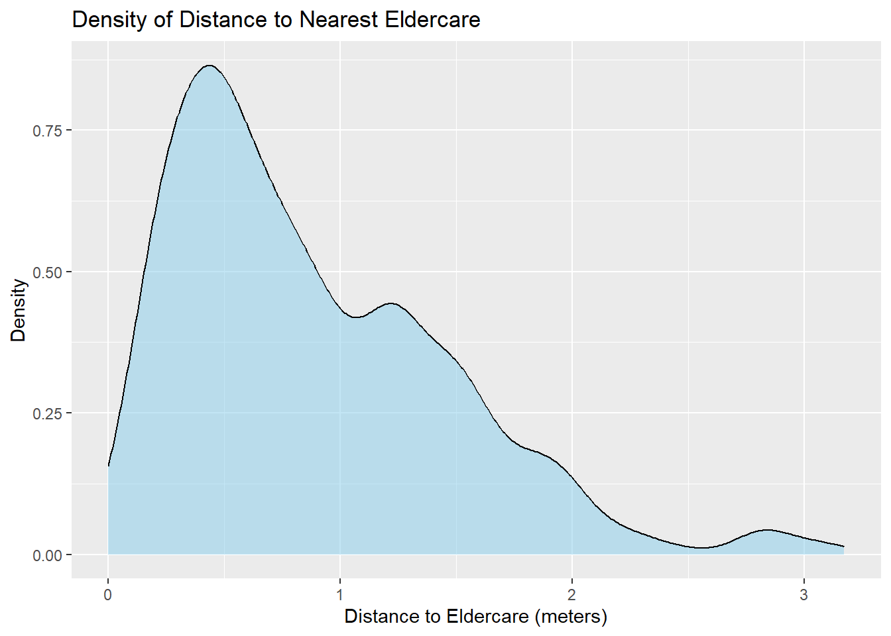
# Distance to nearest CBD
ggplot(joined_data, aes(x = distance_to_cbd)) +
geom_density(fill = "skyblue", alpha = 0.5) +
labs(title = "Density of Distance to Nearest CBD",
x = "Distance to CBD (meters)", y = "Density")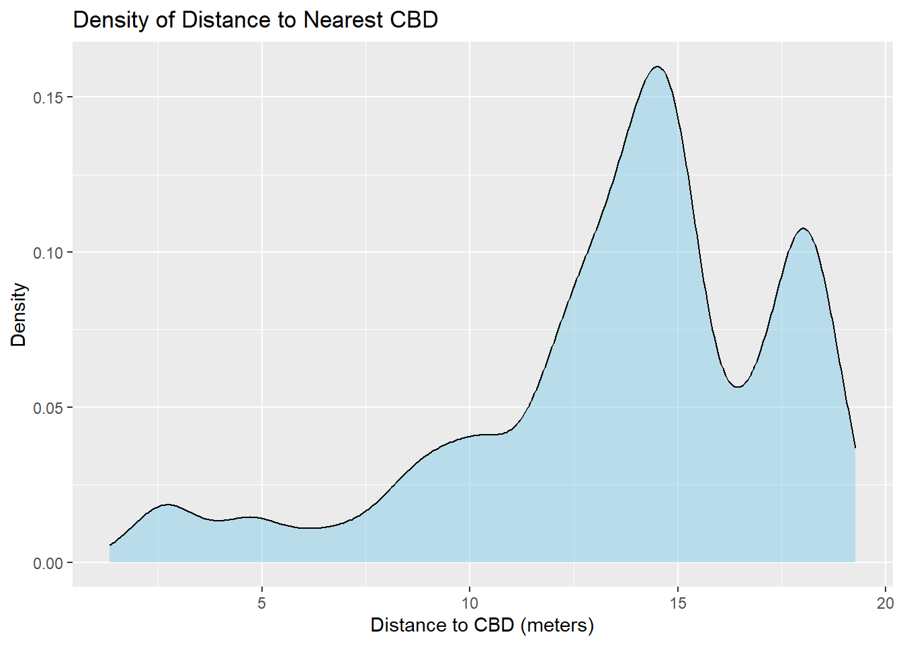
# Distance to nearest hawker center
ggplot(joined_data, aes(x = distance_to_hawker)) +
geom_density(fill = "lightgreen", alpha = 0.5) +
labs(title = "Density of Distance to Nearest Hawker",
x = "Distance to Hawker (meters)", y = "Density")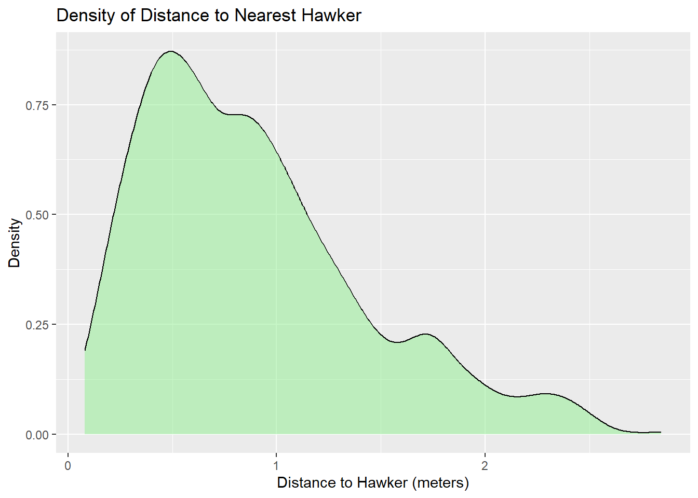
# Distance to nearest mall
ggplot(joined_data, aes(x = distance_to_mall)) +
geom_density(fill = "lightgreen", alpha = 0.5) +
labs(title = "Density of Distance to Nearest Mall",
x = "Distance to Mall (meters)", y = "Density")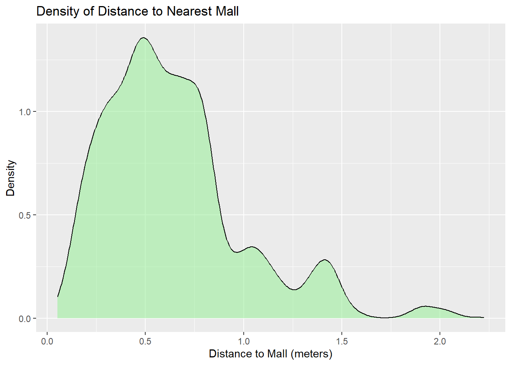
# Distance to nearest MRT station
ggplot(joined_data, aes(x = distance_to_mrt)) +
geom_density(fill = "coral", alpha = 0.5) +
labs(title = "Density of Distance to Nearest MRT Station",
x = "Distance to MRT Station (meters)", y = "Density")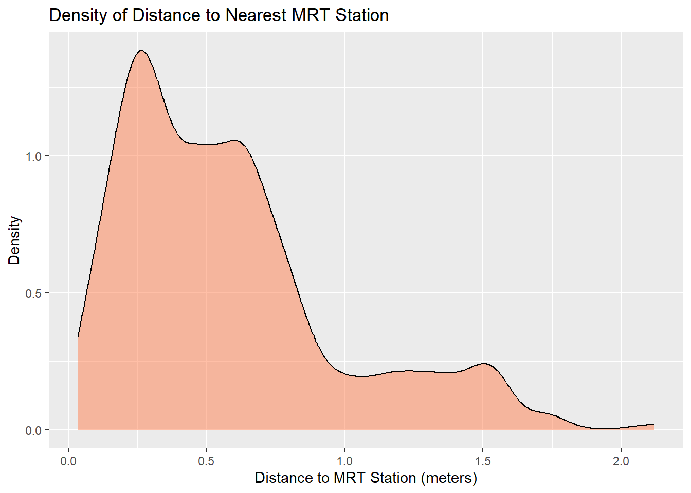
# Distance to nearest park
ggplot(joined_data, aes(x = distance_to_parks)) +
geom_density(fill = "coral", alpha = 0.5) +
labs(title = "Density of Distance to Nearest Park",
x = "Distance to Park (meters)", y = "Density")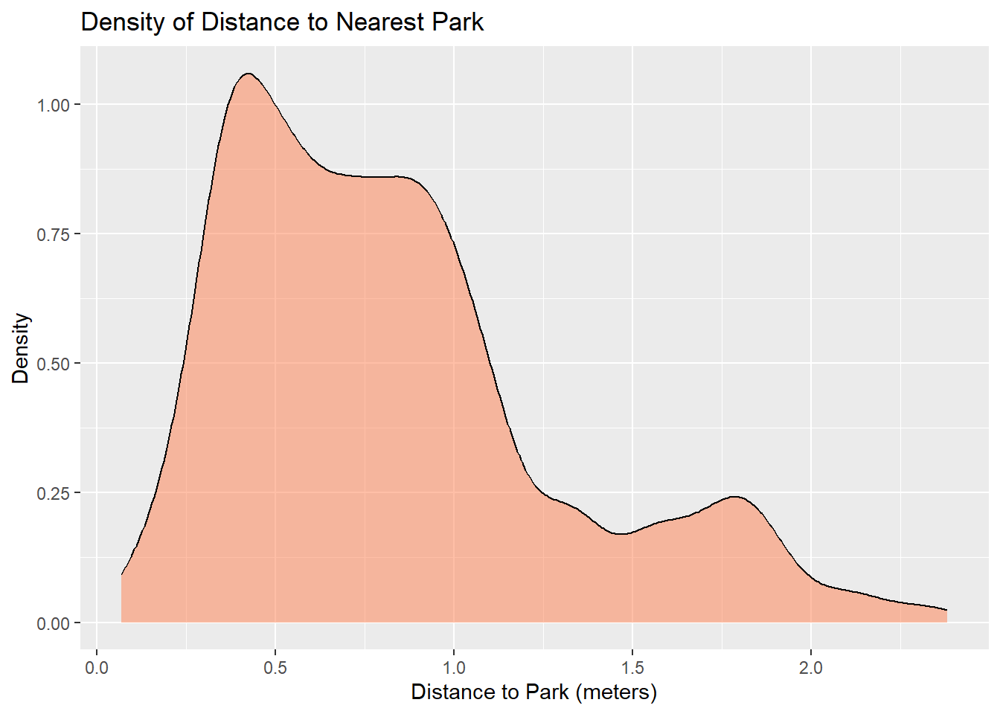
# Number of preschools within 500m
ggplot(joined_data, aes(x = preschools_within_400m)) +
geom_histogram(binwidth = 1, fill = "purple", color = "black") +
labs(title = "Histogram of Preschools within 500m",
x = "Number of Preschools within 500m", y = "Frequency")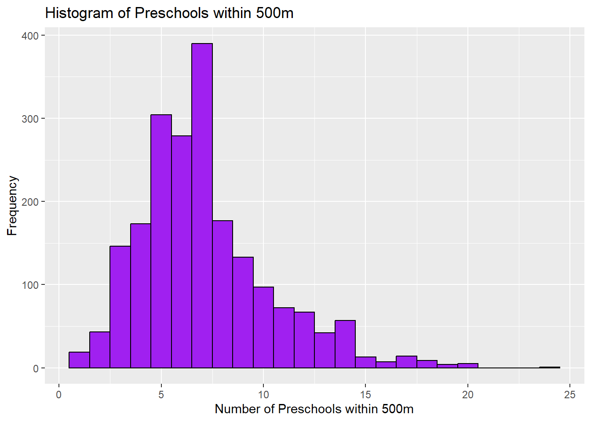
# Number of schools within 500m
ggplot(joined_data, aes(x = schools_within_400m)) +
geom_histogram(binwidth = 1, fill = "orange", color = "black") +
labs(title = "Histogram of Schools within 500m",
x = "Number of Schools within 500m", y = "Frequency")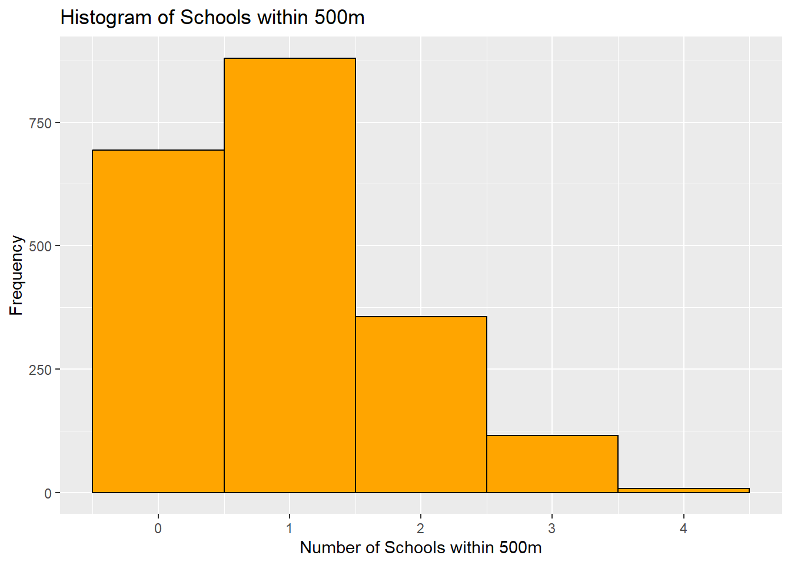
ggplot(joined_data, aes(x = median_storey)) +
geom_histogram(binwidth = 1, fill = "orange", color = "black") +
labs(title = "Histogram of Median Storey",
x = "Number of Schools within 500m", y = "Frequency")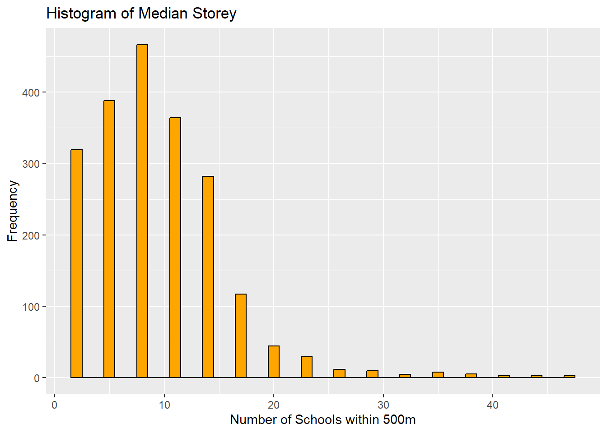
ggplot(joined_data, aes(x = total_remaining_lease_mths)) +
geom_histogram(binwidth = 1, fill = "orange", color = "black") +
labs(title = "Histogram of Total Remaining Lease Months",
x = "Number of Schools within 500m", y = "Frequency")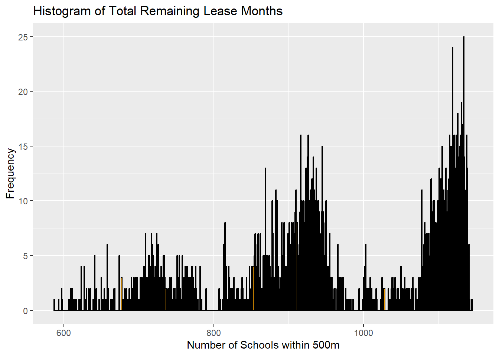
ggplot(joined_data, aes(x = years_since_lease_commence)) +
geom_histogram(binwidth=1,fill = "orange", color = "black") +
labs(title = "Histogram of Years since lease commence",
x = "Number of Schools within 500m", y = "Frequency")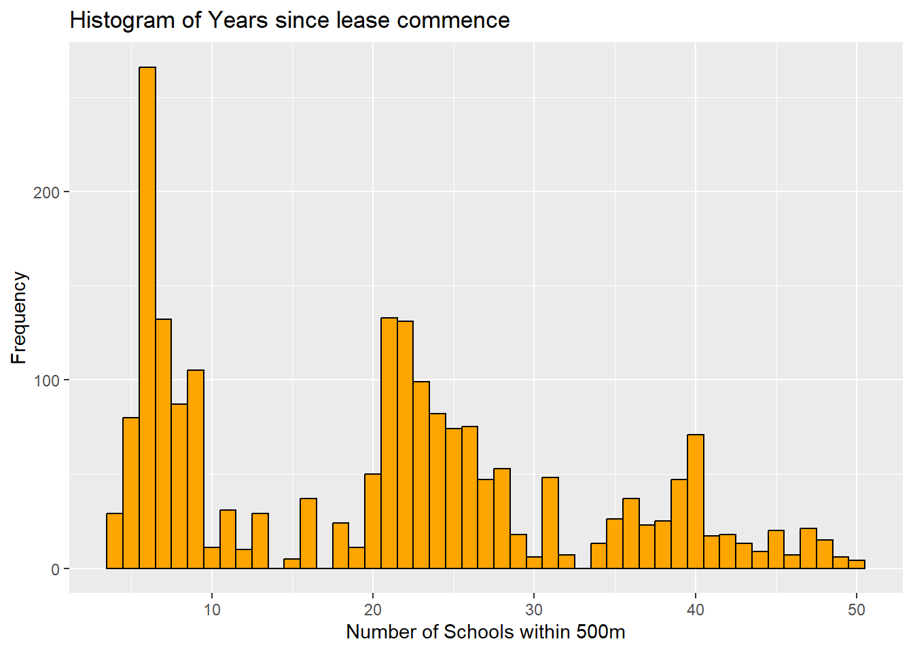
ggplot(joined_data, aes(x = floor_area_sqm)) +
geom_density(fill = "orange", color = "black") +
labs(title = "Histogram of floor area sqm",
x = "Number of Schools within 500m", y = "Frequency")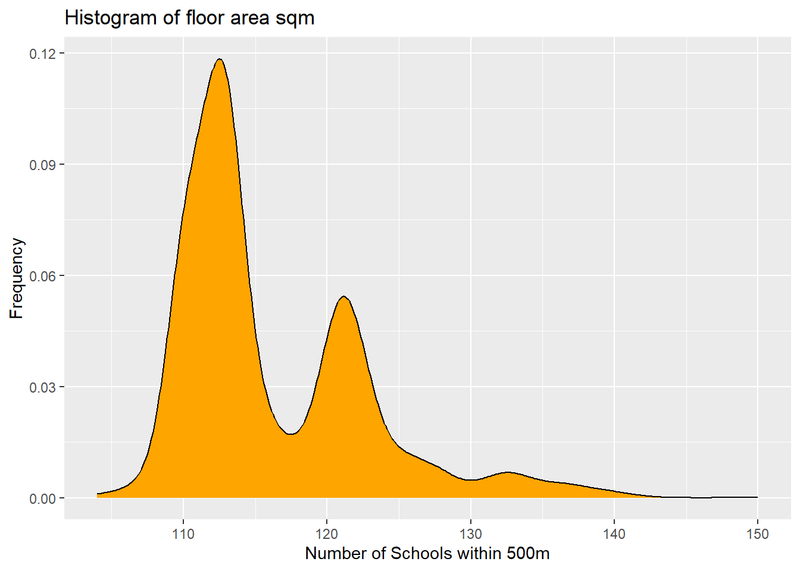
ggplot(joined_data, aes(x = resale_price)) +
geom_density( fill = "orange", color = "black") +
labs(title = "Histogram of resale price",
x = "Number of Schools within 500m", y = "Frequency")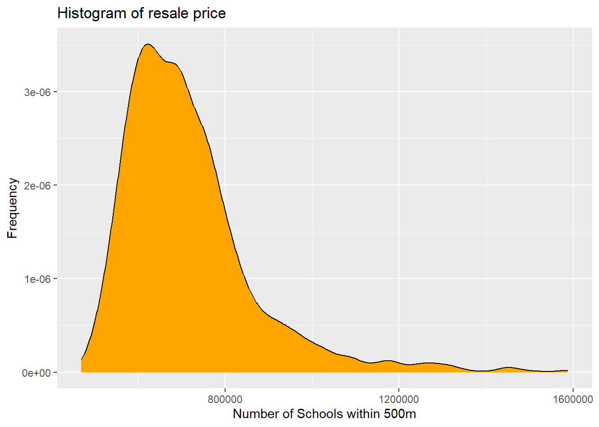
4.8 LOG TRANSFORMATION
Since several variables did not appear to follow a normal distribution, a log transformation was applied to make them more suitable for analysis in the GWR model. Adding 1 to each variable prevents issues with zero values.
# Log-transform all distance and count variables, adding +1 to avoid log(0) issues
joined_data <- joined_data %>%
mutate(
log_distance_to_eldercare = log(distance_to_eldercare + 1),
log_distance_to_cbd = log(distance_to_cbd + 1),
log_distance_to_hawker = log(distance_to_hawker + 1),
log_distance_to_mall = log(distance_to_mall + 1),
log_distance_to_mrt = log(distance_to_mrt + 1),
log_distance_to_parks = log(distance_to_parks + 1),
log_preschools_within_400m = log(preschools_within_400m + 1),
log_schools_within_400m = log(schools_within_400m + 1),
log_median_storey = log(median_storey + 1),
log_total_remaining_lease = log(total_remaining_lease_mths + 1),
log_years_since_lease_commence = log(years_since_lease_commence + 1),
log_floor_area_sqm = log(floor_area_sqm + 1),
log_resale_price = log(resale_price + 1)
)We plotted the log-transformed variables, which improved the visualization by normalizing skewed distributions.
library(ggplot2)
# Density plots for log-transformed distance variables
# Distance to nearest eldercare
ggplot(joined_data, aes(x = log_distance_to_eldercare)) +
geom_density(fill = "skyblue", alpha = 0.5) +
labs(title = "Density of Distance to Nearest Eldercare",
x = "Distance to Eldercare (meters)", y = "Density")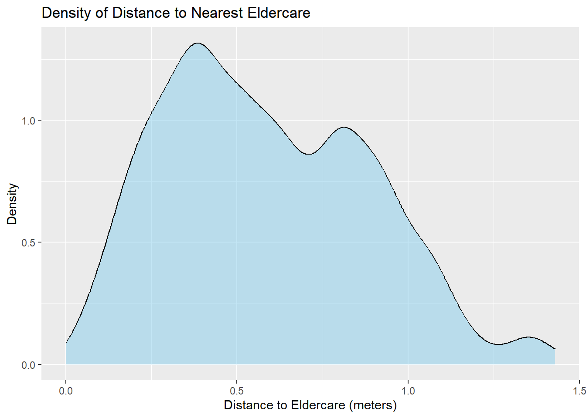
# Distance to nearest CBD
ggplot(joined_data, aes(x = log_distance_to_cbd)) +
geom_density(fill = "skyblue", alpha = 0.5) +
labs(title = "Density of Distance to Nearest CBD",
x = "Distance to CBD (meters)", y = "Density")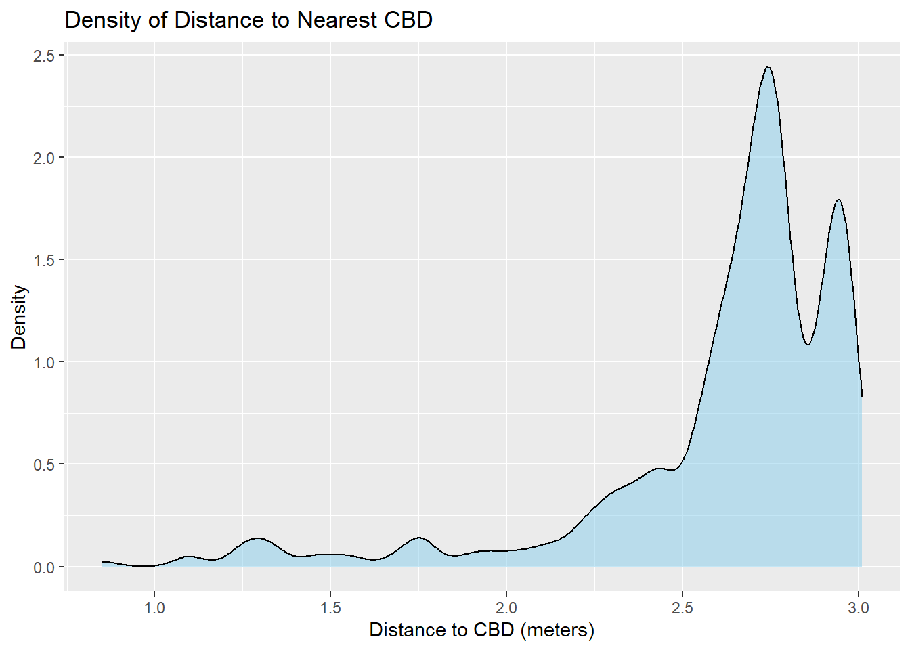
# Distance to nearest hawker center
ggplot(joined_data, aes(x = log_distance_to_hawker)) +
geom_density(fill = "lightgreen", alpha = 0.5) +
labs(title = "Density of Distance to Nearest Hawker",
x = "Distance to Hawker (meters)", y = "Density")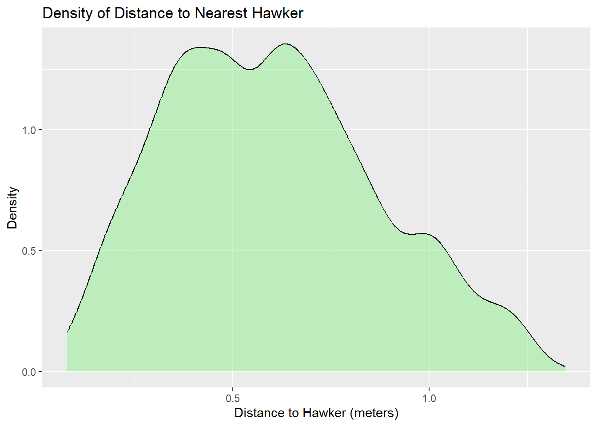
# Distance to nearest mall
ggplot(joined_data, aes(x = log_distance_to_mall)) +
geom_density(fill = "lightgreen", alpha = 0.5) +
labs(title = "Density of Distance to Nearest Mall",
x = "Distance to Mall (meters)", y = "Density")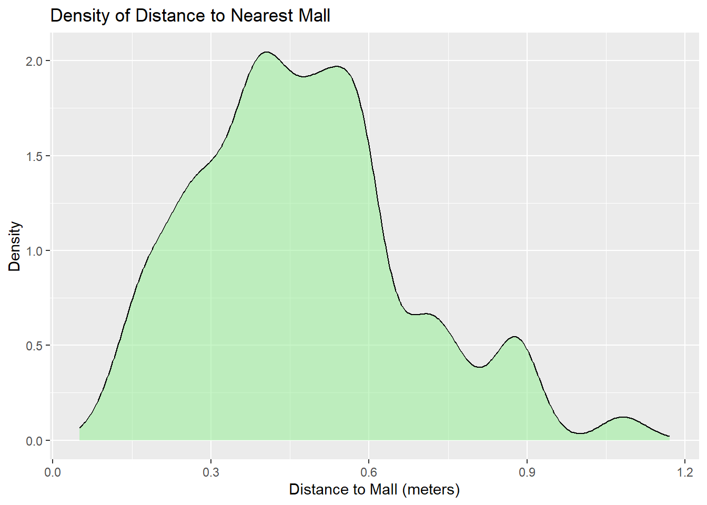
# Distance to nearest MRT station
ggplot(joined_data, aes(x = log_distance_to_mrt)) +
geom_density(fill = "coral", alpha = 0.5) +
labs(title = "Density of Distance to Nearest MRT Station",
x = "Distance to MRT Station (meters)", y = "Density")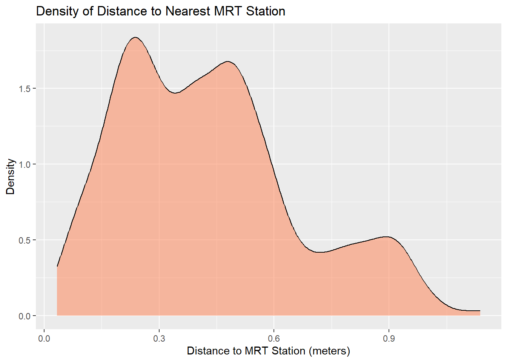
# Distance to nearest park
ggplot(joined_data, aes(x = log_distance_to_parks)) +
geom_density(fill = "coral", alpha = 0.5) +
labs(title = "Density of Distance to Nearest Park",
x = "Distance to Park (meters)", y = "Density")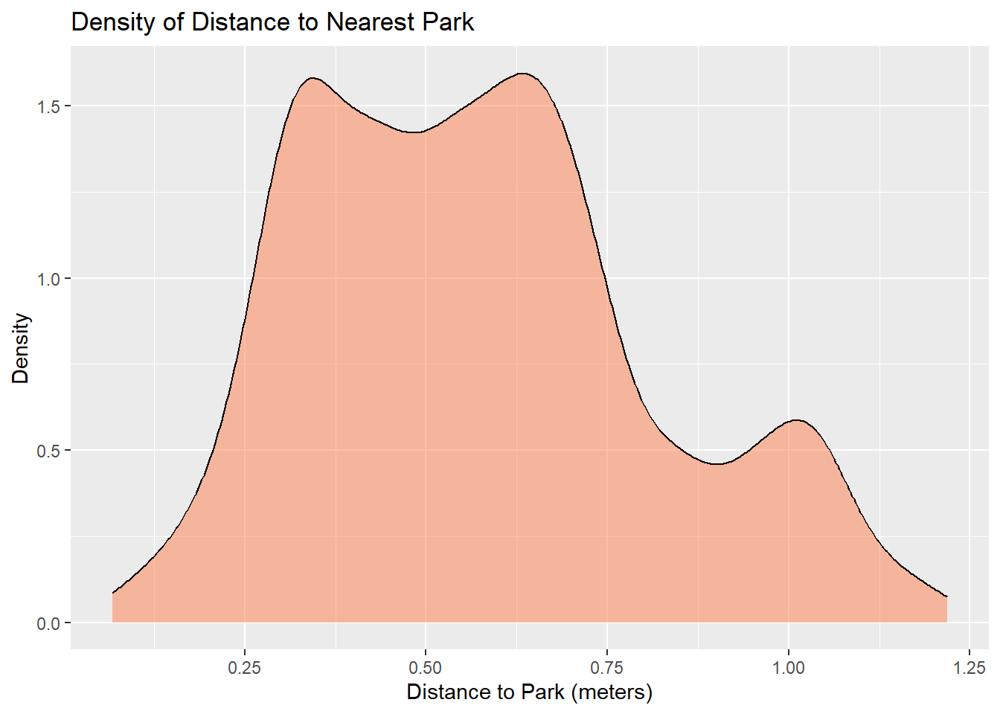
# Number of preschools within 500m
ggplot(joined_data, aes(x = log_preschools_within_400m)) +
geom_histogram(binwidth = 1, fill = "purple", color = "black") +
labs(title = "Histogram of Preschools within 500m",
x = "Number of Preschools within 500m", y = "Frequency")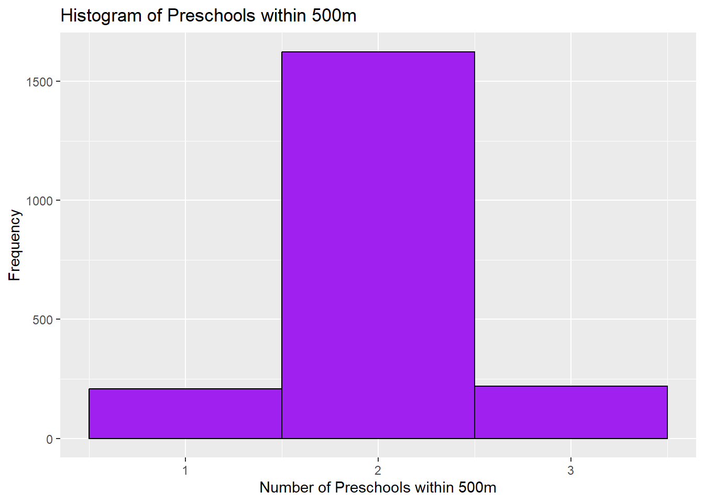
# Number of schools within 500m
ggplot(joined_data, aes(x = log_schools_within_400m)) +
geom_histogram(binwidth = 1, fill = "orange", color = "black") +
labs(title = "Histogram of Schools within 500m",
x = "Number of Schools within 500m", y = "Frequency")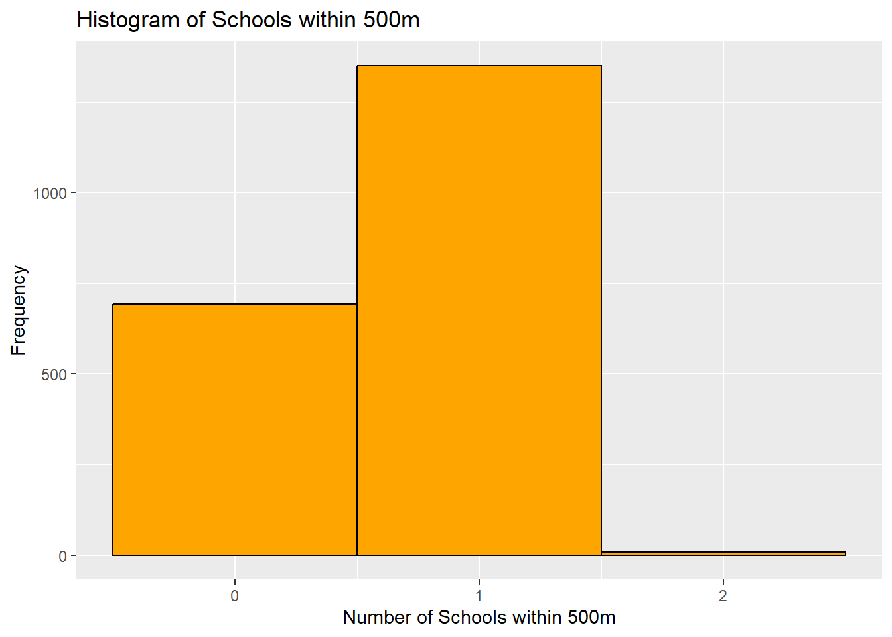
ggplot(joined_data, aes(x = log_median_storey)) +
geom_histogram(binwidth = 1, fill = "orange", color = "black") +
labs(title = "Histogram of Median Storey",
x = "Number of Schools within 500m", y = "Frequency")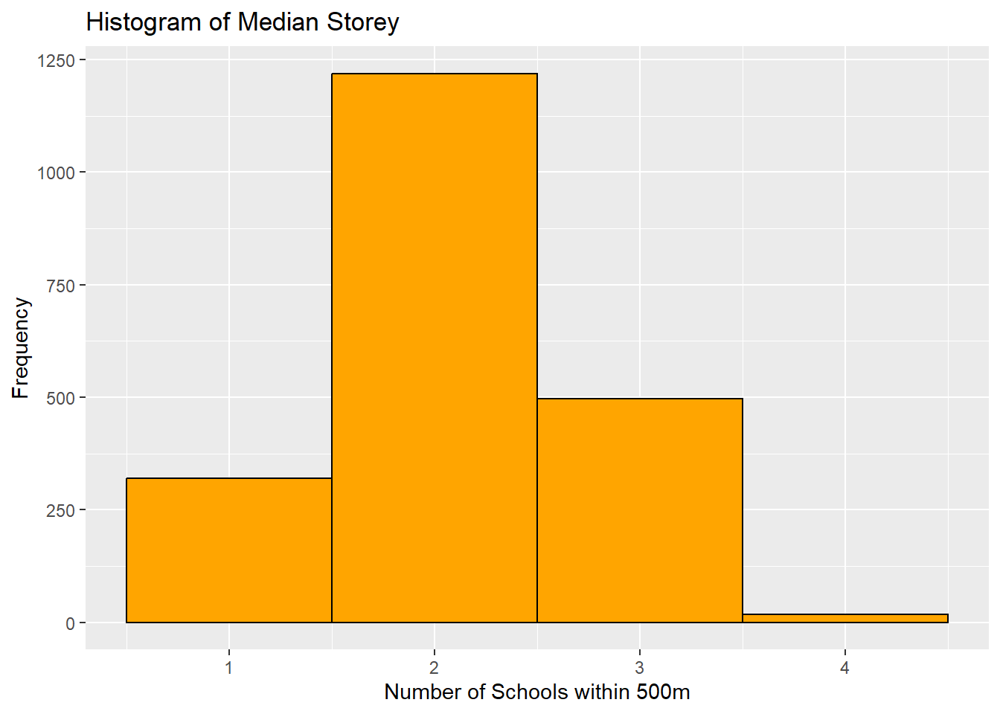
ggplot(joined_data, aes(x = log_total_remaining_lease)) +
geom_histogram(binwidth=1,fill = "orange", color = "black") +
labs(title = "Histogram of Total Remaining Lease Months",
x = "Number of Schools within 500m", y = "Frequency")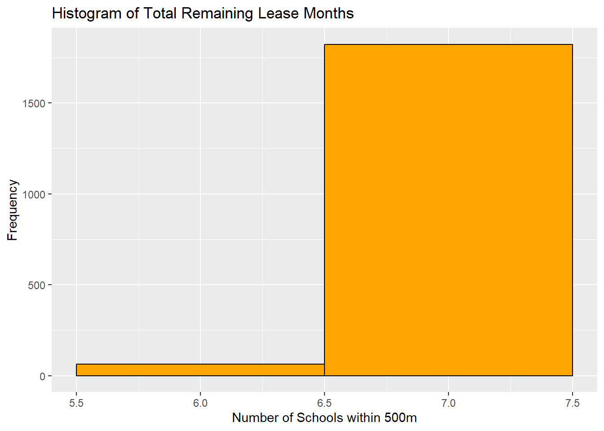
ggplot(joined_data, aes(x = log_years_since_lease_commence)) +
geom_histogram(binwidth=1,fill = "orange", color = "black") +
labs(title = "Histogram of Years since lease commence",
x = "Number of Schools within 500m", y = "Frequency")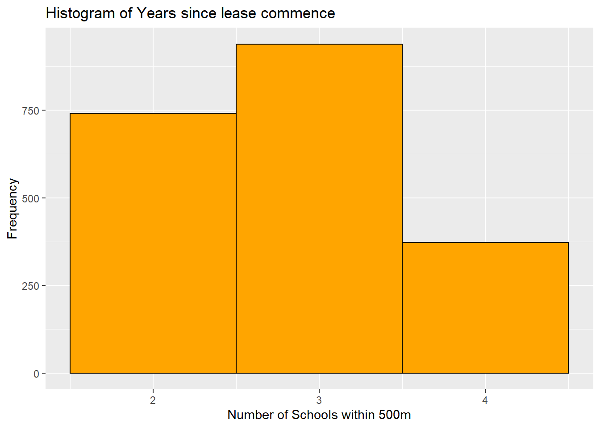
ggplot(joined_data, aes(x = log_floor_area_sqm)) +
geom_density(fill = "orange", color = "black") +
labs(title = "Histogram of floor area sqm",
x = "Number of Schools within 500m", y = "Frequency")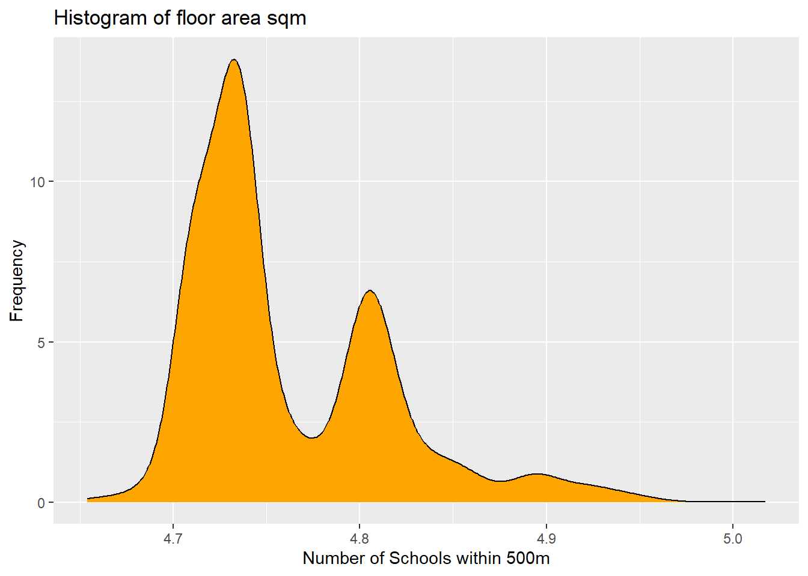
ggplot(joined_data, aes(x = log_resale_price)) +
geom_density( fill = "orange", color = "black") +
labs(title = "Histogram of resale price",
x = "Number of Schools within 500m", y = "Frequency")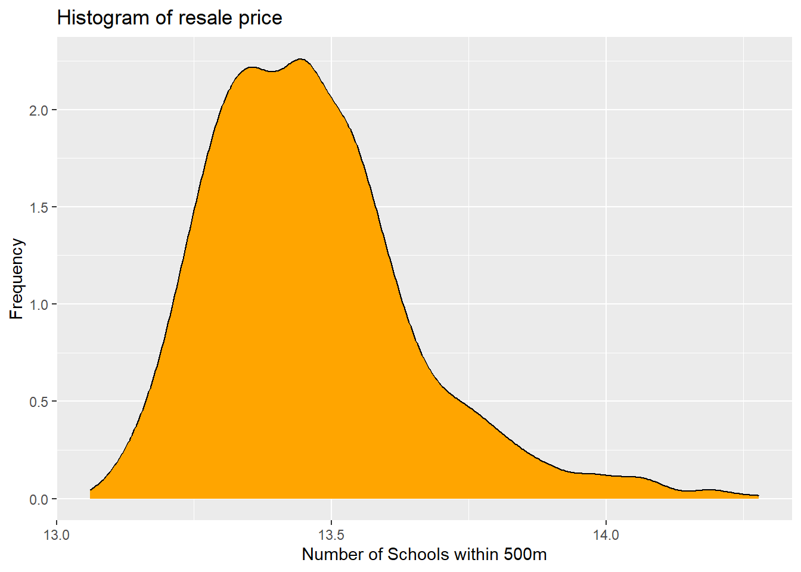
4.7 CORRELATION MATRIX
This code calculates and visualizes the correlation matrix for log-transformed variables in the joined_data dataset, excluding the spatial geometry.
Note
In the correlation matrix, the variables log_total_remaining_lease and log_floor_area_sqm show a strong negative correlation. This suggests that as the total remaining lease (log-transformed) decreases, the floor area (log-transformed) tends to increase, or vice versa. Therefore, we will remove log_total_remaining_lease from the model to reduce multicollinearity because time is also represented in other variables, as opposed to log_floor_area_sqm.
# Step 1: Drop the geometry column
numeric_data <- joined_data %>%
st_drop_geometry() %>% # Remove the geometry column
select(
log_distance_to_eldercare, log_distance_to_cbd, log_distance_to_hawker,
log_distance_to_mall, log_distance_to_mrt, log_distance_to_parks,
log_preschools_within_400m, log_schools_within_400m,
log_median_storey,log_total_remaining_lease, resale_price, log_years_since_lease_commence,log_floor_area_sqm
)
# Step 2: Compute the correlation matrix
cor_matrix <- cor(numeric_data, use = "complete.obs") # Use "complete.obs" to handle missing data
# Print the correlation matrix
print(cor_matrix) log_distance_to_eldercare log_distance_to_cbd
log_distance_to_eldercare 1.000000000 0.30118662
log_distance_to_cbd 0.301186622 1.00000000
log_distance_to_hawker 0.111039508 0.34659052
log_distance_to_mall 0.009091574 -0.17058707
log_distance_to_mrt 0.078492235 0.03578689
log_distance_to_parks -0.017131482 0.37375049
log_preschools_within_400m 0.023055243 0.11970527
log_schools_within_400m 0.013676719 0.09870777
log_median_storey -0.094844163 -0.19613562
log_total_remaining_lease 0.079828286 0.24744941
resale_price -0.235732333 -0.64274729
log_years_since_lease_commence -0.029641406 -0.18218299
log_floor_area_sqm -0.061250887 -0.08959270
log_distance_to_hawker log_distance_to_mall
log_distance_to_eldercare 0.11103951 0.0090915740
log_distance_to_cbd 0.34659052 -0.1705870741
log_distance_to_hawker 1.00000000 -0.1627287931
log_distance_to_mall -0.16272879 1.0000000000
log_distance_to_mrt -0.04772654 0.3227345062
log_distance_to_parks 0.11737431 -0.0004525176
log_preschools_within_400m 0.08556389 -0.2903878034
log_schools_within_400m 0.01876348 -0.0989959691
log_median_storey -0.12826378 -0.0240286633
log_total_remaining_lease 0.09655721 -0.1667559150
resale_price -0.31634902 0.0343916380
log_years_since_lease_commence -0.04537941 0.1022365068
log_floor_area_sqm 0.00454388 0.1757466027
log_distance_to_mrt log_distance_to_parks
log_distance_to_eldercare 0.078492235 -0.0171314819
log_distance_to_cbd 0.035786885 0.3737504940
log_distance_to_hawker -0.047726540 0.1173743134
log_distance_to_mall 0.322734506 -0.0004525176
log_distance_to_mrt 1.000000000 0.1100091533
log_distance_to_parks 0.110009153 1.0000000000
log_preschools_within_400m -0.214465568 0.0313474403
log_schools_within_400m -0.217188092 0.0420952613
log_median_storey -0.057106989 -0.0733363997
log_total_remaining_lease -0.005694969 0.1992314719
resale_price -0.069614079 -0.2118702786
log_years_since_lease_commence -0.076149471 -0.1950705844
log_floor_area_sqm 0.179682293 -0.0341265725
log_preschools_within_400m
log_distance_to_eldercare 0.023055243
log_distance_to_cbd 0.119705265
log_distance_to_hawker 0.085563887
log_distance_to_mall -0.290387803
log_distance_to_mrt -0.214465568
log_distance_to_parks 0.031347440
log_preschools_within_400m 1.000000000
log_schools_within_400m 0.279534178
log_median_storey -0.046616068
log_total_remaining_lease 0.004644186
resale_price -0.084728010
log_years_since_lease_commence 0.091914221
log_floor_area_sqm -0.017896573
log_schools_within_400m log_median_storey
log_distance_to_eldercare 0.01367672 -0.09484416
log_distance_to_cbd 0.09870777 -0.19613562
log_distance_to_hawker 0.01876348 -0.12826378
log_distance_to_mall -0.09899597 -0.02402866
log_distance_to_mrt -0.21718809 -0.05710699
log_distance_to_parks 0.04209526 -0.07333640
log_preschools_within_400m 0.27953418 -0.04661607
log_schools_within_400m 1.00000000 -0.01690392
log_median_storey -0.01690392 1.00000000
log_total_remaining_lease -0.25783108 0.11000803
resale_price -0.21226633 0.37665733
log_years_since_lease_commence 0.36913042 -0.10850119
log_floor_area_sqm 0.06575264 -0.16608588
log_total_remaining_lease resale_price
log_distance_to_eldercare 0.079828286 -0.23573233
log_distance_to_cbd 0.247449415 -0.64274729
log_distance_to_hawker 0.096557208 -0.31634902
log_distance_to_mall -0.166755915 0.03439164
log_distance_to_mrt -0.005694969 -0.06961408
log_distance_to_parks 0.199231472 -0.21187028
log_preschools_within_400m 0.004644186 -0.08472801
log_schools_within_400m -0.257831083 -0.21226633
log_median_storey 0.110008033 0.37665733
log_total_remaining_lease 1.000000000 0.22722493
resale_price 0.227224926 1.00000000
log_years_since_lease_commence -0.940797181 -0.29619826
log_floor_area_sqm -0.624374748 -0.02192839
log_years_since_lease_commence
log_distance_to_eldercare -0.02964141
log_distance_to_cbd -0.18218299
log_distance_to_hawker -0.04537941
log_distance_to_mall 0.10223651
log_distance_to_mrt -0.07614947
log_distance_to_parks -0.19507058
log_preschools_within_400m 0.09191422
log_schools_within_400m 0.36913042
log_median_storey -0.10850119
log_total_remaining_lease -0.94079718
resale_price -0.29619826
log_years_since_lease_commence 1.00000000
log_floor_area_sqm 0.53335781
log_floor_area_sqm
log_distance_to_eldercare -0.06125089
log_distance_to_cbd -0.08959270
log_distance_to_hawker 0.00454388
log_distance_to_mall 0.17574660
log_distance_to_mrt 0.17968229
log_distance_to_parks -0.03412657
log_preschools_within_400m -0.01789657
log_schools_within_400m 0.06575264
log_median_storey -0.16608588
log_total_remaining_lease -0.62437475
resale_price -0.02192839
log_years_since_lease_commence 0.53335781
log_floor_area_sqm 1.00000000# Step 3: Visualize the correlation matrix (optional)
corrplot(cor_matrix, method = "color", type = "upper",
tl.col = "black", tl.srt = 45, title = "Correlation Matrix")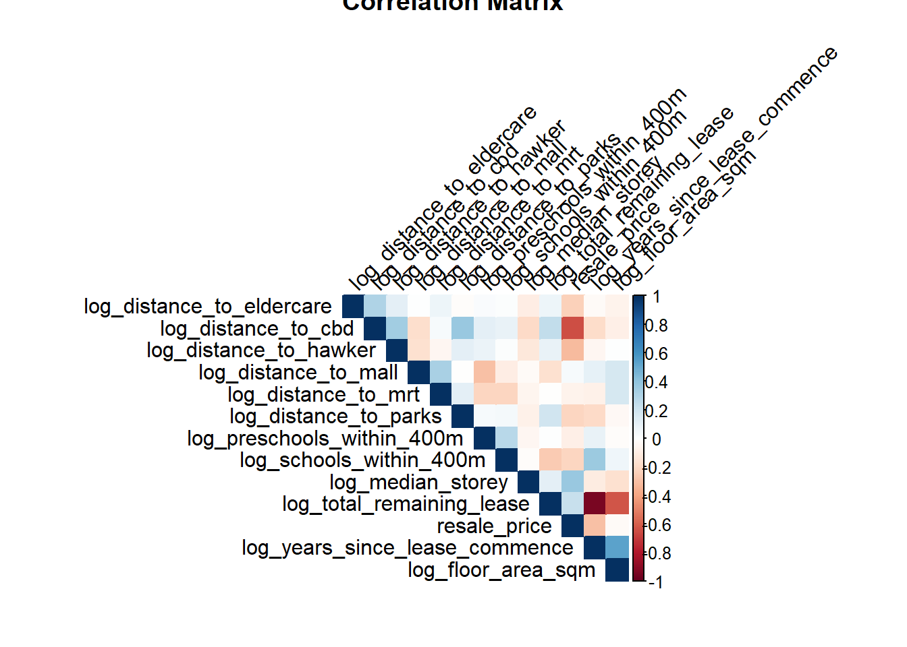
Missing values in numeric columns are imputed with the median to ensure completeness.
# Impute missing values in numerical columns with the median
joined_data <- joined_data %>%
mutate(across(where(is.numeric), ~ ifelse(is.na(.), median(., na.rm = TRUE), .)))write_rds(joined_data, "data/rds/joined_data.rds")joined_data <- readRDS("data/rds/joined_data.rds")5. SPLITTING TO TRAINING AND TEST DATASET
The dataset is split into training and testing sets with a 65/35 proportion, where 65% of the data is used for training the model, and 35% is reserved for testing its performance.
set.seed(1234)
resale_split <- initial_split(joined_data,
prop = 6.5/10,)
train_data <- training(resale_split)
test_data <- testing(resale_split)5.1 Non-Spatial Linear Regression
This non-spatial linear regression model (price_mlr) aims to predict HDB resale prices using log-transformed distance variables and property characteristics as predictors. The model shows that several factors—such as distance to the hawker, CBD, MRT, parks, the median storey and years since commencement date—are significant predictors of resale prices. With an adjusted R-squared of 0.6369, the model explains approximately 63% of the variance in resale prices, which we can assume to be a moderately strong fit.
# Correct model formula with + between variables
price_mlr <- lm(
resale_price ~ log_distance_to_eldercare + log_distance_to_cbd + log_distance_to_hawker + log_distance_to_mall + log_distance_to_mrt + log_distance_to_parks + log_preschools_within_400m + log_schools_within_400m + log_median_storey + log_years_since_lease_commence,
data = train_data
)
# Check the model summary
summary(price_mlr)
Call:
lm(formula = resale_price ~ log_distance_to_eldercare + log_distance_to_cbd +
log_distance_to_hawker + log_distance_to_mall + log_distance_to_mrt +
log_distance_to_parks + log_preschools_within_400m + log_schools_within_400m +
log_median_storey + log_years_since_lease_commence, data = train_data)
Residuals:
Min 1Q Median 3Q Max
-282578 -62062 -10030 50086 425063
Coefficients:
Estimate Std. Error t value Pr(>|t|)
(Intercept) 1621221 31556 51.376 < 2e-16 ***
log_distance_to_eldercare -16823 9013 -1.867 0.062188 .
log_distance_to_cbd -258042 8419 -30.648 < 2e-16 ***
log_distance_to_hawker -52858 10042 -5.264 1.65e-07 ***
log_distance_to_mall -7870 13984 -0.563 0.573661
log_distance_to_mrt -39001 11697 -3.334 0.000879 ***
log_distance_to_parks -18520 11573 -1.600 0.109774
log_preschools_within_400m 11028 6663 1.655 0.098124 .
log_schools_within_400m -3560 6262 -0.569 0.569710
log_median_storey 44621 4298 10.382 < 2e-16 ***
log_years_since_lease_commence -95507 4267 -22.382 < 2e-16 ***
---
Signif. codes: 0 '***' 0.001 '**' 0.01 '*' 0.05 '.' 0.1 ' ' 1
Residual standard error: 90990 on 1322 degrees of freedom
Multiple R-squared: 0.6396, Adjusted R-squared: 0.6369
F-statistic: 234.7 on 10 and 1322 DF, p-value: < 2.2e-166. GEOGRAPHICALLY WEIGHTED REGRESSION
We convert train_data to train_data_sp using as_Spatial to ensure it is in the Spatial format, which is necessary for spatial modeling functions (such as Geographically Weighted Regression) that require spatial data objects.
train_data_sp <- as_Spatial(train_data)
train_data_spclass : SpatialPointsDataFrame
features : 1333
extent : 11755.72, 42441.24, 28457.97, 48339.17 (xmin, xmax, ymin, ymax)
crs : +proj=tmerc +lat_0=1.36666666666667 +lon_0=103.833333333333 +k=1 +x_0=28001.642 +y_0=38744.572 +ellps=WGS84 +towgs84=0,0,0,0,0,0,0 +units=m +no_defs
variables : 48
names : address, postal, month, town, flat_type, block, street_name, storey_range, floor_area_sqm, flat_model, lease_commence_date, remaining_lease, resale_price, remaining_lease_yr, remaining_lease_mth, ...
min values : 102 TECK WHYE LANE, 080109, 2023-01, ANG MO KIO, 5 ROOM, 102, ADMIRALTY DR, 01 TO 03, 105, 3Gen, 1974, 48 years 11 months, 478000, 48, 1, ...
max values : 997C BUANGKOK CRES, 824662, 2024-09, YISHUN, 5 ROOM, 997C, YUNG KUANG RD, 43 TO 45, 142, Type S2, 2020, 95 years 02 months, 1580000, 95, 11, ... 6.1 Variation Inflation Factor
This code uses the Variance Inflation Factor (VIF) to check for multicollinearity in the global regression model predicting resale_price. The VIF values for each predictor in global_model will help identify variables with high collinearity (typically indicated by VIF values greater than 5 or 10).
# Run VIF on the global model to check for multicollinearity
global_model <- lm(resale_price ~ log_distance_to_eldercare + log_distance_to_cbd +
log_distance_to_hawker + log_distance_to_mall +
log_distance_to_mrt + log_distance_to_parks +
log_preschools_within_400m + log_schools_within_400m +
log_median_storey + log_years_since_lease_commence +
log_floor_area_sqm,
data = train_data_sp)
vif(global_model) log_distance_to_eldercare log_distance_to_cbd
1.143913 1.553793
log_distance_to_hawker log_distance_to_mall
1.162686 1.271381
log_distance_to_mrt log_distance_to_parks
1.275896 1.249487
log_preschools_within_400m log_schools_within_400m
1.197455 1.331544
log_median_storey log_years_since_lease_commence
1.084904 1.820063
log_floor_area_sqm
1.577425
Note
Based on these VIF results, there is no indication of multicollinearity among the predictors, as all VIF values are below 2. None of the variables are excessively correlated with each other, supporting the model’s stability and interpretability.
6.2 Calculation the Adaptive Bandwidth
This code determines the optimal adaptive bandwidth (bw_adaptive) for a Geographically Weighted Regression (GWR) model that predicts resale_price using various log-transformed distance and property variables. Using cross-validation (approach = "CV") with a Gaussian kernel, the code adjusts the bandwidth based on local data density, which allows the model to account for spatial variation more accurately. The longlat = FALSE parameter specifies planar distance calculations, aligning with Singapore’s SVY21 coordinate system. This adaptive bandwidth helps capture local effects more effectively across different data densities within the region.
bw_adaptive <- bw.gwr(
resale_price ~ log_distance_to_eldercare + log_distance_to_cbd +
log_distance_to_hawker + log_distance_to_mall + log_distance_to_mrt +
log_distance_to_parks + log_preschools_within_400m +
log_schools_within_400m + log_median_storey +
log_years_since_lease_commence + log_floor_area_sqm,
data = train_data_sp,
approach = "CV",
kernel = "gaussian",
adaptive = TRUE,
longlat = FALSE
)Adaptive bandwidth: 831 CV score: 8.932964e+12
Adaptive bandwidth: 522 CV score: 8.41404e+12
Adaptive bandwidth: 329 CV score: 7.703818e+12
Adaptive bandwidth: 212 CV score: 7.123606e+12
Adaptive bandwidth: 137 CV score: 6.550046e+12
Adaptive bandwidth: 93 CV score: 5.478943e+12
Adaptive bandwidth: 63 CV score: 4.719272e+12
Adaptive bandwidth: 47 CV score: 4.274398e+12
Adaptive bandwidth: 35 CV score: 1.772664e+14
Adaptive bandwidth: 52 CV score: 4.421058e+12
Adaptive bandwidth: 41 CV score: 4.117524e+12
Adaptive bandwidth: 40 CV score: 4.096406e+12
Adaptive bandwidth: 36 CV score: 1.721515e+14
Adaptive bandwidth: 39 CV score: 4.075386e+12
Adaptive bandwidth: 42 CV score: 4.162362e+12
Adaptive bandwidth: 41 CV score: 4.117524e+12
Adaptive bandwidth: 42 CV score: 4.162362e+12
Adaptive bandwidth: 41 CV score: 4.117524e+12
Adaptive bandwidth: 41 CV score: 4.117524e+12
Adaptive bandwidth: 40 CV score: 4.096406e+12
Adaptive bandwidth: 40 CV score: 4.096406e+12
Adaptive bandwidth: 39 CV score: 4.075386e+12 6.3 Calculating the GWR
This code chunk below runs an adaptive Geographically Weighted Regression (GWR) model (gwr_adaptive) to predict resale_price using various log-transformed distance and property characteristics. The model applies the optimal adaptive bandwidth (bw_adaptive) calculated previously. A Gaussian kernel is used to assign weights, and adaptive=TRUE enables the model to capture local spatial variations more accurately. With longlat = FALSE, distances are calculated in planar units, suitable for the SVY21 projection system. This GWR model helps reveal how the influence of each variable changes across different locations.
gwr_adaptive <- gwr.basic(formula = resale_price ~log_distance_to_eldercare + log_distance_to_cbd + log_distance_to_hawker + log_distance_to_mall + log_distance_to_mrt + log_distance_to_parks + log_preschools_within_400m + log_schools_within_400m + log_median_storey + log_years_since_lease_commence + log_floor_area_sqm,
data=train_data_sp,
bw=bw_adaptive,
kernel = 'gaussian',
adaptive=TRUE,
longlat = FALSE)This output summarizes the results of the Geographically Weighted Regression (GWR) model for predicting HDB resale prices.
gwr_adaptive ***********************************************************************
* Package GWmodel *
***********************************************************************
Program starts at: 2024-11-10 23:50:32.110838
Call:
gwr.basic(formula = resale_price ~ log_distance_to_eldercare +
log_distance_to_cbd + log_distance_to_hawker + log_distance_to_mall +
log_distance_to_mrt + log_distance_to_parks + log_preschools_within_400m +
log_schools_within_400m + log_median_storey + log_years_since_lease_commence +
log_floor_area_sqm, data = train_data_sp, bw = bw_adaptive,
kernel = "gaussian", adaptive = TRUE, longlat = FALSE)
Dependent (y) variable: resale_price
Independent variables: log_distance_to_eldercare log_distance_to_cbd log_distance_to_hawker log_distance_to_mall log_distance_to_mrt log_distance_to_parks log_preschools_within_400m log_schools_within_400m log_median_storey log_years_since_lease_commence log_floor_area_sqm
Number of data points: 1333
***********************************************************************
* Results of Global Regression *
***********************************************************************
Call:
lm(formula = formula, data = data)
Residuals:
Min 1Q Median 3Q Max
-250771 -52071 -4361 38963 357278
Coefficients:
Estimate Std. Error t value Pr(>|t|)
(Intercept) -2442411 253217 -9.646 < 2e-16 ***
log_distance_to_eldercare -3692 8279 -0.446 0.65568
log_distance_to_cbd -258594 7697 -33.598 < 2e-16 ***
log_distance_to_hawker -58742 9187 -6.394 2.24e-10 ***
log_distance_to_mall -18410 12800 -1.438 0.15059
log_distance_to_mrt -74777 10920 -6.848 1.15e-11 ***
log_distance_to_parks -30087 10604 -2.837 0.00462 **
log_preschools_within_400m 9205 6092 1.511 0.13103
log_schools_within_400m 8258 5770 1.431 0.15267
log_median_storey 53080 3964 13.392 < 2e-16 ***
log_years_since_lease_commence -135970 4636 -29.330 < 2e-16 ***
log_floor_area_sqm 878407 54380 16.153 < 2e-16 ***
---Significance stars
Signif. codes: 0 '***' 0.001 '**' 0.01 '*' 0.05 '.' 0.1 ' ' 1
Residual standard error: 83180 on 1321 degrees of freedom
Multiple R-squared: 0.6991
Adjusted R-squared: 0.6966
F-statistic: 279 on 11 and 1321 DF, p-value: < 2.2e-16
***Extra Diagnostic information
Residual sum of squares: 9.139144e+12
Sigma(hat): 82863.59
AIC: 33999.21
AICc: 33999.48
BIC: 32827.28
***********************************************************************
* Results of Geographically Weighted Regression *
***********************************************************************
*********************Model calibration information*********************
Kernel function: gaussian
Adaptive bandwidth: 39 (number of nearest neighbours)
Regression points: the same locations as observations are used.
Distance metric: Euclidean distance metric is used.
****************Summary of GWR coefficient estimates:******************
Min. 1st Qu. Median
Intercept -34803840.0 -3360645.6 -1636492.8
log_distance_to_eldercare -418185.5 -49333.7 -10088.8
log_distance_to_cbd -5533860.0 -505069.0 -194637.3
log_distance_to_hawker -237886.7 -106812.7 -45726.0
log_distance_to_mall -1189176.0 -184674.6 -88906.3
log_distance_to_mrt -693260.5 -135518.0 -89237.7
log_distance_to_parks -416260.4 -57750.3 -1313.4
log_preschools_within_400m -33928.9 5040.9 18704.3
log_schools_within_400m -481297.2 -27318.9 -10374.2
log_median_storey 21007.9 37545.5 46342.6
log_years_since_lease_commence -349747.1 -167067.2 -118881.5
log_floor_area_sqm -1383666.8 339302.2 659435.8
3rd Qu. Max.
Intercept 390064.8 14286908
log_distance_to_eldercare 40937.1 362162
log_distance_to_cbd -30425.0 4218732
log_distance_to_hawker -1851.5 498861
log_distance_to_mall -24852.6 141354
log_distance_to_mrt -32354.0 1409540
log_distance_to_parks 91315.8 1207914
log_preschools_within_400m 34855.2 110610
log_schools_within_400m 8868.4 632075
log_median_storey 56008.4 90076
log_years_since_lease_commence -86020.2 37225
log_floor_area_sqm 1050782.3 5912195
************************Diagnostic information*************************
Number of data points: 1333
Effective number of parameters (2trace(S) - trace(S'S)): 220.6678
Effective degrees of freedom (n-2trace(S) + trace(S'S)): 1112.332
AICc (GWR book, Fotheringham, et al. 2002, p. 61, eq 2.33): 32907.62
AIC (GWR book, Fotheringham, et al. 2002,GWR p. 96, eq. 4.22): 32666.73
BIC (GWR book, Fotheringham, et al. 2002,GWR p. 61, eq. 2.34): 32454.94
Residual sum of squares: 2.994256e+12
R-square value: 0.9014108
Adjusted R-square value: 0.8818348
***********************************************************************
Program stops at: 2024-11-10 23:50:33.136128
Note
Some observations:
Global Regression Results: The global model shows an adjusted R-squared of 0.6958, explaining around 70% of the variance in resale prices with significant predictors including distances to CBD, hawkers, MRT stations, parks, and property characteristics like storey level, lease age, and floor area sqm.
GWR Model Performance: The GWR model, with an adaptive bandwidth that uses 34 nearest neighbors, demonstrates improved performance with an R-squared of 0.9374, indicating that the model explains around 94% of the variance in resale prices when accounting for spatial variation. The diagnostic metrics (AICc, AIC, and BIC) suggest a better model fit compared to the global regression.
Spatial Variation in Coefficients: The GWR coefficients vary across locations, as shown in the summary with ranges for each predictor. This variation reflects the differing influence of factors like proximity to parks and lease duration across different areas, which highlights the model’s ability to capture local effects.
6.4 Testing
Next, in the code chunk below we convert test_data to test_data_sp using as_Spatial to ensure it is in the Spatial format, which is necessary for spatial modeling functions (such as Geographically Weighted Regression) that require spatial data objects.
test_data_sp <- test_data %>%
as_Spatial()
test_data_spclass : SpatialPointsDataFrame
features : 719
extent : 11755.72, 42441.24, 28457.97, 48339.17 (xmin, xmax, ymin, ymax)
crs : +proj=tmerc +lat_0=1.36666666666667 +lon_0=103.833333333333 +k=1 +x_0=28001.642 +y_0=38744.572 +ellps=WGS84 +towgs84=0,0,0,0,0,0,0 +units=m +no_defs
variables : 48
names : address, postal, month, town, flat_type, block, street_name, storey_range, floor_area_sqm, flat_model, lease_commence_date, remaining_lease, resale_price, remaining_lease_yr, remaining_lease_mth, ...
min values : 101 SIMEI ST 1, 080109, 2023-01, ANG MO KIO, 5 ROOM, 101, ANCHORVALE CRES, 01 TO 03, 104, 3Gen, 1974, 49 years 10 months, 470000, 49, 1, ...
max values : 997C BUANGKOK CRES, 824662, 2024-09, YISHUN, 5 ROOM, 997C, YUNG KUANG RD, 46 TO 48, 150, Type S2, 2020, 95 years 05 months, 1588000, 95, 11, ... 6.5 GWR - Test Data
The code chunk below uses the gwr.predict function to apply a Geographically Weighted Regression (GWR) model, predicting resale_price in the test dataset (test_data_sp) based on spatial relationships observed in the training dataset (train_data_sp). It uses an adaptive bandwidth (bw_adaptive), a Gaussian kernel, and planar distances (longlat = FALSE) to account for local variations in predictor influence across the region.
gwr_pred <- gwr.predict(
formula = resale_price ~ log_distance_to_eldercare + log_distance_to_cbd +
log_distance_to_hawker + log_distance_to_mall + log_distance_to_mrt +
log_distance_to_parks + log_preschools_within_400m +
log_schools_within_400m + log_median_storey +
log_years_since_lease_commence + log_floor_area_sqm,
data = train_data_sp,
predictdata = test_data_sp,
bw = bw_adaptive,
kernel = "gaussian",
adaptive = TRUE,
longlat = FALSE
)This code extracts spatial coordinates from joined_data, train_data, and test_data, saving them separately as coords, coords_train, and coords_test. It then removes the geometry from train_data and test_data using st_drop_geometry() to make them non-spatial, which is useful for operations or models that don’t require spatial data. The coords_test is combined back with test_data as non-spatial columns.
coords <- st_coordinates(joined_data)
coords_train <- st_coordinates(train_data)
coords_test <- st_coordinates(test_data)train_data <- train_data %>%
st_drop_geometry()test_data <- cbind(test_data, coords_test) %>%
st_drop_geometry()The code head(gwr_pred$SDF@data) displays the first few rows of the data frame portion of the SDF object within gwr_pred.
head(gwr_pred$SDF@data) Intercept_coef log_distance_to_eldercare_coef log_distance_to_cbd_coef
1 -447005.5 46928.083 -31446.33
2 -447005.5 46928.083 -31446.33
3 -1969741.2 104764.705 -282407.41
4 -3854089.0 -62356.912 317273.82
5 -1871725.6 -9015.912 -314148.13
6 -1871725.6 -9015.912 -314148.13
log_distance_to_hawker_coef log_distance_to_mall_coef
1 -62297.41 -62052.32
2 -62297.41 -62052.32
3 -83623.86 -136695.82
4 -213623.70 -148397.40
5 -82720.25 -72235.02
6 -82720.25 -72235.02
log_distance_to_mrt_coef log_distance_to_parks_coef
1 -170913.97 -69052.77
2 -170913.97 -69052.77
3 34928.72 -105852.31
4 -22068.47 84998.40
5 -132368.86 -35269.88
6 -132368.86 -35269.88
log_preschools_within_400m_coef log_schools_within_400m_coef
1 34677.68 -38244.957
2 34677.68 -38244.957
3 23391.68 -25929.534
4 26132.99 -7489.214
5 -33928.91 5429.789
6 -33928.91 5429.789
log_median_storey_coef log_years_since_lease_commence_coef
1 59600.59 -161789.97
2 59600.59 -161789.97
3 50987.70 -97954.03
4 39811.39 -122039.99
5 61543.24 -161465.91
6 61543.24 -161465.91
log_floor_area_sqm_coef prediction prediction_var
1 375575.8 718578.6 3151530689
2 375575.8 700690.7 3089844684
3 768174.6 578033.2 3192560509
4 861718.5 565676.4 3028393313
5 840838.9 711916.8 2817099966
6 840838.9 707884.4 2804542824COMPARING ACTUAL VALUES TO PREDICTED VALUES USING A SCATTERPLOT
This code manually computes predicted resale_price values for each observation in the test dataset, using spatially varying coefficients from a Geographically Weighted Regression (GWR) model.
First, it extracts the coefficient estimates stored within the GWR object (gwr_pred$SDF@data) and converts the spatial test_data_sp dataset into a regular data frame for easier processing. The prediction calculation combines the intercept and each log-transformed predictor, multiplied by its corresponding coefficient, to generate spatially adjusted predictions for resale prices across the dataset. This approach considers local variations for each predictor, as GWR models allow coefficients to vary by location.
Next, the code creates a new data frame to compare the actual and predicted resale prices. Using ggplot2, it generates a scatter plot where each point represents an HDB property, with actual prices on the y-axis and predicted prices on the x-axis.
# Extract coefficients and test data as data frames
coefficients <- gwr_pred$SDF@data
test_data_df <- as.data.frame(test_data_sp)
# Calculate the predicted values manually
predicted_values <- coefficients$Intercept_coef +
coefficients$log_distance_to_eldercare_coef * test_data_df$log_distance_to_eldercare +
coefficients$log_distance_to_cbd_coef * test_data_df$log_distance_to_cbd +
coefficients$log_distance_to_hawker_coef * test_data_df$log_distance_to_hawker +
coefficients$log_distance_to_mall_coef * test_data_df$log_distance_to_mall +
coefficients$log_distance_to_mrt_coef * test_data_df$log_distance_to_mrt +
coefficients$log_distance_to_parks_coef * test_data_df$log_distance_to_parks +
coefficients$log_preschools_within_400m_coef * test_data_df$log_preschools_within_400m +
coefficients$log_schools_within_400m_coef * test_data_df$log_schools_within_400m +
coefficients$log_median_storey_coef * test_data_df$log_median_storey +
coefficients$log_years_since_lease_commence_coef * test_data_df$log_years_since_lease_commence +
coefficients$log_floor_area_sqm_coef * test_data_df$log_floor_area_sqm
# Create a comparison data frame
comparison_data <- data.frame(
Actual = test_data_sp$resale_price,
Predicted = predicted_values
)
# Plot the actual vs. predicted values
library(ggplot2)
ggplot(comparison_data, aes(x = Predicted, y = Actual)) +
geom_point(color = "black", alpha = 0.6) +
labs(title = "Actual vs Predicted Resale Prices",
x = "Predicted Resale Price",
y = "Actual Resale Price") +
theme_minimal()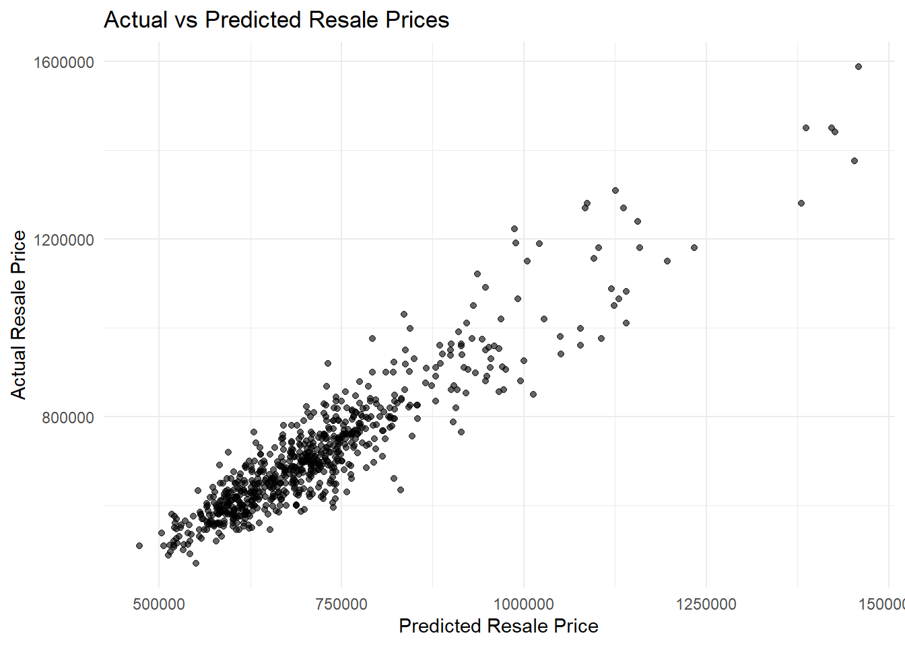
It is important to note that points that closely follow the 45-degree line indicate strong predictive performance. Deviations suggest areas where the model may need refinement.
Note
The scatter plot shows a generally positive correlation between actual and predicted resale prices, meaning the model captures the trend in resale prices to some extent. However, there is noticeable dispersion from the 45-degree line, especially at higher price ranges, where the model tends to underpredict or overpredict actual values. This suggests that while the GWR model performs reasonably well for mid-range prices, it struggles with accuracy at the extremes of the price distribution.
After 1.5 days, the GWRF model is still running and has not completed. Consequently, this analysis relies solely on the Geographically Weighted Regression (GWR) model and a non-spatial linear regression model, as the extended processing time for GWRF has made it impractical to include in the current analysis.